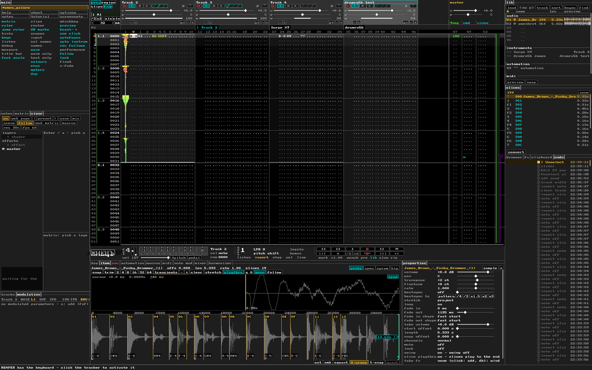
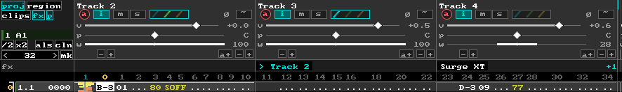
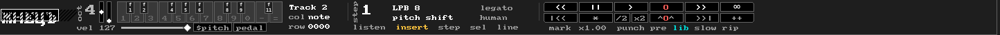
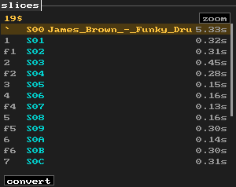
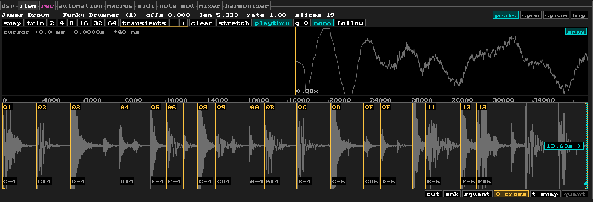
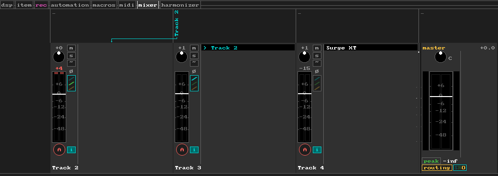
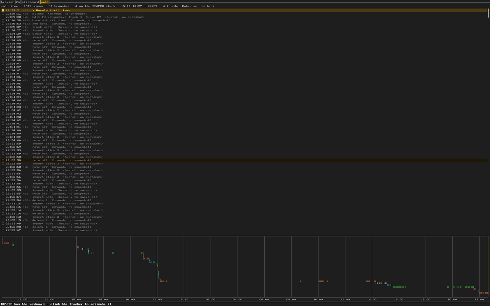
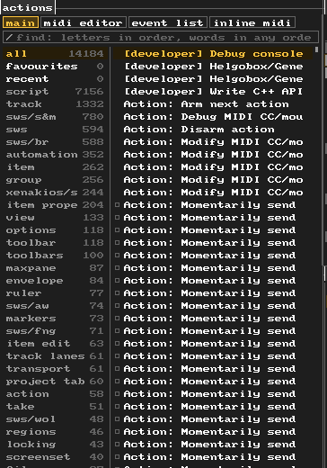
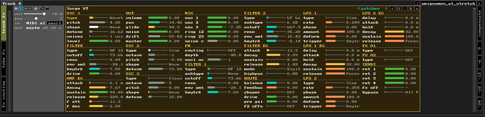
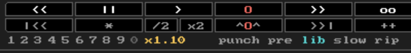

jf_tracker
a tracker core over the REAPER project with modules around it: Vim keys, built like Emacs
Signs
Every control is a letter. Where a sign stands instead, it means one thing everywhere:
~ | automation: the envelopes of the track (the button in the track header; lit when there are some, filled when shown) |
(o) | record arm, a round button; filled when armed. (a) inside: auto-arm, the track arms itself when selected |
(ø) | phase invert, a round button by ~ |
i m s | input monitor (outline: auto / tape), mute, solo |
/// | routing, three stripes: cyan — sends, green — receives, amber — hardware outputs; a stripe is pale in its colour when there is none and bright when there is one (option routing as /// off — the letters s r o) |
Δ | delta solo: hear what an effect takes away |
<< || > O >> oo | transport: rewind, pause, play, record, forward, loop |
|<< >>| | to the start / the end |
* *N | freeze: a short loop around the play position, like a DJ repeater; *N — its length. f + its label — the lengths (digits pick, Enter), wheel — shorter / longer. While playing a new length starts when the current loop ends, so the play position never falls out of a shorter loop |
/2 x2 | half / double speed (the lit one blinks) |
^O^ | shift rec: ^ is Shift, O is rec — waits for a MIDI note, then records |
| while recording | what is being recorded shows at once on armed tracks, before REAPER makes the item at stop: input notes on their rows (on a box), the input level of an audio track as a bar per row. Only on screen; at stop the real item replaces it |
++ | dub: copy the loop forward and go on |
a n | step: a auto, n next note |
[3d_] | what you are typing, right at the cursor (a count, an operator, a value) — the eyes stay where you work |
@ | macros: @a plays register a; the word MACROS@a in the modeline while one is being recorded; Opt+Shift+2 opens the big macros panel at the cursor |
' | harpoon: pinned places |
| frames | a thin light frame — the module with the keyboard; the frame of the rows is the mode colour: white NORMAL, red INSERT (thicker), amber VISUAL, blue : and / |
Why
Hands stay on the home row. j and f are the two keys with bumps under your index fingers, and that is the name. h j k l move the cursor, and f jumps to anything on screen by a two-letter label. The mouse is optional.
It is REAPER, hard native. The tracker is only a shell over your project. What you see are real tracks, items, takes, MIDI notes, fixed lanes, regions, envelopes and FX. There is no file format of its own: close the window and the project is exactly as it was, and every edit is one REAPER undo step.
The grammar is Vim: modes, operators with motions (d3j, dw, yy), counts,
registers, the . repeat, macros, the : command line. Every control is a letter, never an icon: when a
sign is needed, it comes from another alphabet (Δ delta solo, ø phase).
«I feel free when I am absolutely constrained.» — Igor Stravinsky. Fewer ways, one look, one place for each thing: the constraint is the instrument.
A few rules hold everywhere, and changes keep to them:
- Nothing of its own. A feature writes what REAPER already has (items, envelopes, automation items, take FX, routing) instead of inventing new objects. If REAPER can store it, the tracker only shows and edits it.
- One function, one key. No second way to the same thing; keys are mnemonic (s slice, t track: tt td).
- d ≠ D (and a…f). On a value field in INSERT (envelope, CC / PB / AT lane,
vol, delay, the value of a command) the lowercase a b c d e f are the
NORMAL keys (b back, e event end,
dddwdpdc…), then INSERT again. The hex digits A–F of a value are uppercase: DD is Shift+D twice. The code of a command (0D,SI) and the note field stay as they are. - Two states toggle, more open a list. A button flips on / off; three or more values open a dropdown with the current one marked.
- z is how you look, g is where you go, the menu is what you do. Enter opens the smart
dropdown of the field under the cursor: it shows what can be typed there. Type the value (
9E,C#4,0U): once it can only be one value it goes in, no Enter needed (0V9Ein one go); or pick with the mouse; hex cells show the decimal, the tip says what the value does. - Letters, not icons. Every control is a word or a letter.
First steps
One REAPER setting: the tracker turns off FX: Auto-float new FX windows on start (it tells you once) — otherwise every new effect opens its own window and that window takes the keyboard away from the tracker. :autofloat turns it back on (option no REAPER auto-float).
| h j k l | move: field, row. gg G start / end, { } bars |
| f | labels on everything on screen: type two letters and you are there |
| m | the keyboard on / off. On, the digits and the F row play notes (keyboard), [ ] octave, { } velocity; the letters stay Vim either way |
| Esc | INSERT and back, as in Renoise: in INSERT the keyboard writes notes (with the keyboard off, i works too). Smart: while playing the first Esc stops and leaves the cursor on the play position (Space stops and goes back), the next one toggles INSERT; while recording Esc still deletes the take. Option Esc stops playback |
| Space | play / stop |
| Tab Shift+Tab | next / previous track (in the wave column — the next / previous hit); Option+Tab — the next pane, the keyboard goes there (a light frame shows where) |
| F2 … F6 | F2 back to the tracker from anywhere, F3 the mixer on / off, F4 the top pane through its tabs, F5 scopes, F6 master; the same key again — back to the tracker |
| ` \ | ` is the sustain pedal while you hold it (NORMAL with the keyboard; in INSERT it is the note-off) / \ the menu of what is under the cursor, the same as the right click, \\ the main menu |
| Ctrl+/ Option+/ Cmd+/ | find an effect (all of them) / inside the DSP chain of the track / a file in the browser |
| ? \ ? | any REAPER action, fuzzy (the actions panel shows them all) / the whole help (the menu \, then ?, or the help button of main; \ h - the hints pane: what the module under the mouse is and how to use it; holding a modifier half a second shows what it does): j k line by line through all sections, J K section, / search, o the whole help in the browser (with pictures) |
| Cmd+F12 | restart the tracker from its files (after an update); the layout and the options stay |
:tutorial | a guided tour, fourteen steps (its chapters are listed in main while it runs) |
On screen

- main module: help, about, options, notes, tutorial, screensets; quick switches laid out like the screen
- top panel: tabs
dspitemrecautomationmacrosmidimixerharmonizer… (every pane can hold any of them) - matrix: the song as patterns (regions) × tracks
- tracker: rows = steps, columns = tracks; note · instrument · volume · delay · commands
- transport strip: position, BPM, signature, beats, octave, step; the keyboard is the
keyspane (under the browser), m turns it on / off - lib and slices: the sounds of the cursor track and the slices of the selected one
- browser: files, Media Explorer databases, projects, kits
- DSP: the FX chain of the cursor track, with meters

/// (pale — nothing, bright — there is a route), phase ø, automation ~; volume v, pan p and width w as sliders; below — the column numbers and the jump ruler.The module with the keyboard focus has a thin light frame; the rows of the tracker have a second frame in the colour of the mode (see signs). By default a plain click works
inside a module and leaves the focus where it is; Option+click moves the focus (option focus by mouse).
Panes
The window is laid out like tmux or zellij: a tree of splits, every module a pane, several modules in one place are a stack of tabs (their titles sit in the top line of the pane border). The tracker is a pane too and always stays. The layout is saved with the window and in screensets.
- ⌘h ⌘j ⌘k ⌘l — focus the neighbour pane (as in dwm); with ⇧ — move the pane there.
- ⌥Tab — next pane in order. A tab of a stack — a click on its title, or Ctrl+W
g+ its letter. - Ctrl+W — pane mode (stays on until Esc, numbers on the borders, the keys in a pop-up):
g+letter go to a panel,s/v+letter split below / right,T+letter into this stack,Bout of the stack,x/Xswap,+ - < > =size,zzoom,chide,Spacenext layout,uundo. :pane dsp with item,:pane browser hide,:pane matrix right,:pane reset,:pane wide.- Mouse: click — focus, click a title — that tab, drag the line between panes — size (double click — equal), right click a title — hide.
Panel letters: t tracker, m matrix, b browser, l lib (slices are a folder in it), n main,
e properties, N note mod, x mixer, k tracks, y clipboard, U undo, A actions, ? help (a few lines about the focused module and its keys, follows the focus), K keys, w map, T patterns, C region playlist, F phrases, G lfogen, H humanizer, R reform, B bouncer, P performance, I hints, , options, E console,
o notes, f fx list, d dsp, r rec, i item, a automation,
M midi, h harmonizer, q macros, c scopes, S master,
v video, V visor. In pane mode (Ctrl+W) a letter goes after g: Ctrl+W g w — the map. A hidden panel comes back when you go to it. Ctrl+W c + a letter — a custom module: a file in modules/ (shipped, c f freesound) or in Data/jf_tracker_modules/ (your own; see the API). zz in any panel — that panel over the whole window, zz again — back.
Options → panes off brings the old fixed layout back.
NORMAL
⌥H ⌥L track · 0 $ first / last column
w b e event · W B event on any track · gn gN next / previous pattern, same row · gp gP pattern start / end
gg G 10G · { } bar
^D ^U half page · zz the module on the whole window
da+ e automation l row j k below / above h all but the row (the track); capital — all tracks, daE in the pattern · dT the track in all regions
yy y{motion} copy · p paste
c{motion} change · s split · M mute
^A ^X ±1 · r{value} set
u undo · ⌘⇧Z redo · . repeat · q @ macros
zt track view: big wave / spectrum / notes · zo overview (the tracker from afar: LPB below 1, a row = up to 16 bars) · zT zoom the track (all its events, the others folded) · th tH tU hide the track / show hidden / unhide
za zF fold the track / all · zE hide empty columns · zW zoom on the item · zM master · zr zR router
+ - LPB · F find a sample for this place · m keyboard on / off
aa all automation of the track · ap any parameter (fzf) · al the last touched
the
view button (top left) — rulers, the tracker, the screen for the mouse · ` pedal · \ menu · ? actions · \ ? help · \ h hintsWith the keyboard on (m) the digits and the F row play notes, [ ] change the octave; the letters stay Vim (keyboard). In the master columns cmd and visor w b e go from marker to marker, dd yy p cut, copy and put one.
Macros: qa records, @a plays (with the keyboard on Shift+2 is a note — Option+Shift+2 opens the big macros panel at the cursor).
A count goes before any motion or edit: 3j, d2w, 5@a. A Russian layout works by key position. After d y c g z t T r q @ ' a popup at the cursor (which-key) lists what can follow. Hold Shift, Ctrl, Opt or Cmd (or two of them) for half a second without a key: the help pane lists what that modifier does in the module in focus, then what it does everywhere.
Keyboard
The notes live on the digit row and the function row above it. Physically it is a small piano: the digits are the white keys, and each F key sits over the gap between two digits, where a black key would be. There is no black key between E and F or B and C, so F3, F7 and F10 play nothing. That is an octave and a half under one hand; [ ] move the octave, { } the velocity.
Why this way, and not the usual q 2 w 3 row of trackers: here the letters are Vim. h j k l, d, y, p, w, b, e are moves and edits, and a note on any of them hides a command. On the digits and the F row the keyboard takes nothing from Vim: with the keyboard on you play and still move, cut and paste with the same hand position. While the keyboard plays (KEYS: m in NORMAL, the mode word shows KEYS; or INSERT) the F-key shortcuts are off in every module, so a note never opens a panel. Counts like 3j work again when the keyboard is hidden.
| Shift+note | listen only, nothing is written (all white and black keys) |
| Shift+Option+note | the selected slice at that pitch |
| ` | NORMAL and KEYS: the sustain pedal (CC64) while you hold it; in INSERT it stays note-off (under a note that already ended — stretches it to this row). The whole sample is Ctrl+Shift+1: Ctrl+Shift+a slice key plays from that slice to the end of the sample. Note-off: ` this subcolumn, Shift+` every track (Shift = all tracks, as Shift+⌫), Ctrl+~ the whole track |
| sliced sound | 1 is slice 1, F1 slice 2, 2 slice 3 … in key order; the whole sample is Ctrl+Shift+1. The slices list and the wave show the key of each slice |
| in INSERT | the digits and the F row write notes; every other key is a NORMAL command and then you are back in INSERT (w x dd p u …); . repeats the last edit; Opt+J K previous / next instrument |
| layout qwerty | options → keyboard layout: the old row q 2 w 3 e, octave z x, velocity c C |
INSERT

$pitch and pedal, the pitch and mod wheels, then the cursor, step, LPB, the transport and on the right the play position, tempo, time signature, metronome and swing.With the default layout frow INSERT is NORMAL plus the notes: the digits and the F row write, every other key does what it does in NORMAL and you stay in INSERT; [ ] octave, { } velocity, Opt+J K instrument. The old qwerty layout (options → keyboard layout) keeps its own INSERT keys:
| modifiers on a note | one rule: Shift listens only with the option Shift+keys preview (off by default, as in Renoise — to listen, leave INSERT: the keyboard plays in KEYS). Option+note — the selected slice at that pitch (option slice pitch from: key 1 or key 6 is the original pitch); not sliced — the note beside, in a new subcolumn (a chord). Ctrl+Shift+note — that slice to the end of the sample (Ctrl+Shift+1 — the whole sample); Ctrl+digit is always the step. Option+Shift — listen to the slice pitch (with the same option). Cmd is never a note (Cmd+digit — a channel). While the keyboard plays these keys are notes, so Option+digit instrument and Option / Ctrl+F transpose work with the keyboard off (m) |
| sliced sound | frow: 1 F1 2 F2 … = slices 1 2 3 4 …, the whole sample — Ctrl+Shift+1 or :whole (qwerty: q the whole sample, 2 w 3 … slices); Option+key — the selected slice at that pitch; Ctrl+Shift+key — from that slice to the end of the sample (Ctrl+Shift+1 — the whole sample), one note, the instrument's playthru stays as it is |
| MIDI keyboard | writes into the cursor column the same way |
Edits, drawn
The end of a note is === (note-off: the sound releases), a free OFF (nothing sounds there) is OFF, a cut is ^^^ (^ in INSERT: stops at once - CC120 for MIDI, no fade for audio). Options end of note / free OFF pick the glyphs (OFF for the Renoise habit).
What each key does to the rows and to the note (the item in REAPER). | — the note sounding, OFF in the diagrams below — where it ends (=== on screen by default), > — the cursor row.
Rows
| where rows move | Backspace and Opt+Backspace move rows inside what you see: the pattern (zp), the section (zs) or the whole track to =END (option backspace mode: view / pattern / track) |
| Backspace | delete the cursor row of the track: everything below moves up; a note through the row is a row shorter (its OFF moves up); a note starting on it is deleted. In a MIDI clip the clip is not cut. Shift — all tracks |
| Option+Backspace | insert an empty row at the cursor; below moves down; a note through it gets longer. Ctrl+Option+Cmd+J — under the cursor, K — above it; Shift — all tracks; a count — N rows |
| Delete / x | only the event under the cursor, nothing moves |
One note (NORMAL)
| Ctrl+Shift+J / K | the end of the note a row later / earlier (not stretched; past the sample — the loop of the instrument, else silence) |
| Ctrl+Shift+H / L | the start a row earlier / later; the place in the file moves with it (as trim in REAPER) |
| Shift+Option+Cmd+J / K | slip: the note stays, the sound inside it moves a row down / up |
| Ctrl+Enter | all the properties of this one note in a box (volume, pan, transpose, rate, fades, offset …): j k row, h l value, a letter jumps to its row — the lighter letter of each name (not h j k l g f: loop is o, length e; again — the next one), Enter list, R reset, Esc close. The properties panel has the same letters |
| Shift+Space | play the note under the cursor (its track solo, with the fx, its whole length — the retrigger repeats too) — change something in the box, listen at once; Shift+Option+Space — at x0.5 |
| Option+Cmd+Space / Shift+Cmd+Space | listen step on / off — the row the cursor lands on plays on the cursor track; listen line on / off — the row plays on all tracks (stopped transport) |
| Cmd+F1 / F2 | microtone: down / up 1/6 tone (72-EDO). The mark sits after the octave: C-4^ C-4^^ C-4^3, v is down. MIDI notes go out as MPE: a microtonal note moves to its own channel (2–16) with a pitch bend before it (range 48 semitones), so chords in just intonation keep every note in tune — the synth must be in MPE mode (Surge XT is switched on by itself; others: their MPE option); audio items — a fractional pitch |
| Ctrl+A / Ctrl+X | the value in the field under the cursor up / down by one (a count — by N): the note — a semitone, vol, delay, a command; on a lane (CC, PB, PC) and an envelope an empty row first takes the value above it (what sounds there), the next press changes it |
:legato fill / the legato button | each note lasts to the next one, not stretched (the plain :legato stretches) |
Slices are pooled
All notes of one slice play the same piece of the sample. Move the start of a slice in the item tab — every note of that slice (transposed ones too) starts its sound at the new place; the notes themselves stay where they are and keep their length.
Copy and paste
| yy V…y | copy rows (V — on every track); the clipboard tab keeps the history |
| p | paste at the cursor: a note already on that row is replaced (with x-fade on — kept); the pasted notes keep their lengths |
| P | paste beside, into a new subcolumn |
Commands
| typing | the code shows in the cell (0R__), the cursor waits for the digits |
| ` on a command column | stop what runs there from the rows above (0D.. → 0D00), like a note-off for commands |
| Ctrl+Option + + / - | on a command field — the command above again, value +1 / -1, the cursor a step on; elsewhere — the fields of the cursor track one by one (vol, delay, commands 1..4) |
0Rxy | retrigger inside the note: a copy every y/16 row, each x/16 quieter; the copies have no cells of their own |
Pan view
zvp shows the cursor track as a field of positions across the stereo field, zvP every track; again — back.
Time goes down as always, the centre : is in the middle. A note sits at its pan: its name on its first row, centred on the position
(C-4, a microtone mark right after it: C-4^; a field of 13 positions or less — one letter, C# a lowercase c), then | while it rings; an audio note shows its wave instead, three positions wide, coloured by spectrum (dark - low, bright - high).
All note lanes of the track are one channel here: a new note goes beside, the sounding ones ring on to their OFF or end; with the cursor on a note (its position, its first row) the new note replaces it and keeps its pan
(a mono track, z1, cuts). Above the cursor the ruler shows its pan: C, L25, R40.
| h l | position; 20h — L20, 100l — R100 (a count is percent here) |
| H L | move the note under the cursor a position; 20H — exactly to L20 |
| w b | the next / previous note start of the channel: along the row, then down |
| W B | along the row to the next / previous note or its wave (sideways) |
| s | cut the note at the cursor position on this row (the other notes of the row stay whole) |
| x dw | delete the note at the cursor position (not the whole row); empty there — dw takes the next event, as w would go; 3dw — three |
| Shift+Opt+H L | coarser / finer: 5 … 65 positions |
| INSERT | a note key writes the note with the pan of the position (audio — take pan, slixer — 0P) |
Recording
| Ctrl+R | the rec tab (the jf_rec ring of the track) |
| F12 | reload the audio device (when the sound card stops) |
| Option+R | record into the tracker: the cursor track is armed, recording starts at the cursor row |
shift (under rec), :shiftrec | shift rec: waits for a MIDI note - that note starts the recording from the cursor row, at the project rate (set x0.5 and play: it plays back twice as fast); the first note lands on the row, automation records as REAPER writes it (envelopes in latch / write); REAPER pre-roll is skipped for it; again - cancel, Space stops |
| Cmd+R | record a new sound: the take goes into the lib of the cursor track as its own instrument |
| while recording | Space — keep, the cursor stays where it stopped; Enter — keep and the cursor goes back to the start; Esc — delete the take (asks first; option ask before deleting a take) |
VISUAL
v selects a block, then a — smart select (as Paketti, the cursor stays): first the column over the whole pattern, a wider → the bar on all tracks → half the pattern → the pattern, i narrower → the column in the bar → in the beat; Ctrl+Shift+hjkl moves the selection; V whole rows, Shift+hjkl selects from the cursor and extends (in INSERT also s); a mouse drag in the body does the same. On a selection:
d y c M ^A ^X r{note}, and commands
such as :interp vol (a ramp), :arp up 2, :scramble, :legato.
Option+drag on an event moves the whole block.
: commands
: opens the command line, Tab completes, the help line shows the arguments. The ones you will use most:
:len N :sig 5/4 | pattern length in steps (Ns seconds, Nb bars) / time signature for the project or one pattern. A click on sig (the matrix column or the transport) opens a picker: big N/D, a table of 1..16 over /2 /4 /8 /16 (a click sets it), this pattern / whole project; keys: digits, Tab or /, h l j k, a, Enter |
:add [bars] [name] :name | a new pattern after the last one / rename the cursor pattern |
:arp :legato :interp :scramble | generators and shapers over the selection or the pattern |
:debug :debug share | a bug? :debug on, do it again, then :debug share — jf_tracker_debug_share.txt in the REAPER folder, ready to send: keys, handlers and errors stay, track / file names, paths and any free text are replaced by <w> <path> <text> |
:quantize :beatsync | smart quantize of the sample / fit it to the tempo |
:pt :big :macro | PT-mode (four big channels, a nod to ProTracker) / the item tab over the whole window / zoom out: a row is a beat (LPB 1), again — back |
:shotpane panel file.png | a picture of a panel (or window, or x,y,w,h) into help/ — that is how the pictures of this page are made; the window may be off screen |
:wave :reg :lpb :theme :dock | view: waves, only the cursor region, rows per beat, theme, docked or floating |
:options :tutorial | all options in one window / the tour |
Matrix
From small to big. One rule: each level is made of the one before it.
| note | a note or a slice in a row |
| phrase | a piece of one track saved as one note (ph:NAME): the note plays it, its pitch transposes it, edits of the source reach every copy (phrases pane, F); Opt+Shift+R turns what you just played into a new phrase |
| pattern | all tracks for some bars: a region with a code, A1; copies with the same name are one pattern |
| section | a region without a code over patterns: verse over A1 A2 |
| seq / playlist | the order: seq — patterns as text (A1 A1 B1x2), playlist — sections in a row; both in the region playlist pane (A in the matrix), with a scheme of the whole song |
| arrangement | which lanes play: a named set, each with its own playlist |
| project | the song: patterns in a row from =START to =END, the library after =END |
The song is a list of patterns. A pattern is a REAPER region; regions with the same name are copies of one pattern
(pooled), and an edit in one copy goes into all of them (autosync). Each slot row shows the name, the time
signature and the length; a click on them edits. Cells are pattern × track.
Pattern codes, as Elektron banks: a name that starts with a letter and a number (A1, D12 verse)
is a code, shown in the number box. The letter is a family of variants: a new pattern takes the next free letter
(C1), a clone the next number of its letter (A1 → A3), a pooled repeat the same code. A length
typed on a free bar makes a pattern there. A region without a code over other regions is a section
(verse over A1 A2): not a slot, its name stands in the ruler and a strip marks its slots; its edges follow its
first and last pattern after every edit. Old names keep working as patterns. Codes are two characters by default
(A1 … A9, AA … AF, the variant a hex digit); option pattern codes = dec makes
A10, A11; both kinds are read. The matrix menu converts: c old names get codes,
h / d codes to hex / decimal, r renumber in order: A1 B4 C2 #1 D7 → A1 B1 C1 D1 E1, variants of a letter stay together (:codes codes|hex|dec|seq).
| Space on a slot | queue it: it starts at the end of the playing one (live); the button space: play makes it a plain play / stop, as in the tracker |
| o O dd yy p | new slot after / before, delete, copy, paste: slots edit like Vim lines |
| Ctrl+Shift+H / L | another pattern in this slot (previous / next) |
:keyspat (button keyspat, also :pads) | MPC style: the note keys play the patterns of the song — 1 F1 2 … the first, second, third pattern; the key is shown by its name. quant — seamless, when the playing one ends (REAPER smooth seek), sudden — at once, at the same place inside (a short gap while REAPER refills its render-ahead buffer). rec — the order you play is recorded, rec again — it is written after the song as linked repeats |
:seq (C in the region playlist pane; A in the matrix opens it) | Seq: the order of the patterns as text, typed right in its row of the region playlist pane. Words: a pattern or section name, a region number; x2 repeat, :16 the first 16 rows, /2 half, -8 skip 8 rows, +8 then its first 8 rows once more — A1 A1 B1x2 C1:16 D1-8 B2+8 verse. Tab completes names. play — whole patterns follow seamlessly, shortened ones jump; write — after the song (whole ones as linked repeats, shortened ones as their own pattern). Named, kept in the project: new dup name del next prev |
help pane: < > 1..5 | The head shows the last action done (a key, a zoom by the mouse). < > — back / forward over the actions done; past the last one it follows you again. 1..5 — bookmarks: an empty one keeps the page and its scroll, a kept one takes you there, Shift+click overwrites. The wheel scrolls |
T r / button timesel | The time selection becomes a section; a quick name — intro, verse, pre-chorus, chorus, hook, build, drop, break, breakdown, bridge, solo, outro — or your own (:tsec name). A taken name gets a number: verse 2. The button also plays the selection as a loop or clears it |
| matrix loop zone (the bar ruler) | Double-click — loop exactly this slot; drag up / down — several; Cmd+click — pick slots here and there, the loop jumps from one to the next without a gap; Shift+click — extend. The time selection / loop is drawn as a [ in the ruler, picked slots — amber |
autoarm (top left) | Auto-arm on every track — the selected track is the one armed for recording; again — off |
| a / c | as in Vim: a new slot after the cursor and its name at once / change the pattern of the slot (the list) |
| A | the region playlist pane: seq, the sections row and the song playlist, the arrangements — the matrix itself has no playlist |
patternize | the button of the patterns pane (in the middle when there are none): regions without a code become patterns, or sections with patterns every 1 2 4 8 16 bars inside |
| P / yp / U | pooled repeat to the right (MIDI pooled, items grouped — REAPER pooling) / free copy / unpool this repeat |
Sample map
A pane of its own (a tab next to the browser, Ctrl+W g w): every sound file of the folder open in
the browser as dots in groups — by the words of the name (kick, snare, hat, loop, fx, vox …), else by subfolder. No limit on the
number of files: the folder is read a little every frame the first time, then kept as an index on disk
(Data/jf_tracker_mapcache) and checked for changes quietly. The mini lf on the left walks the folders
(j k, l / Enter, h); files db proj pm on top pick what the map lays out.
Views (v): graph — rings of groups with their files around; cards — a grid of sectors;
nebula — one galaxy of every file, groups as rectangular sectors over the cloud; a Shift+click on a sector shows its
system — all its files with names (galaxy / Esc — back). On the right of the nebula — the history of what
you played from the map; the dot just played is bright, then dark for 10 plays, then it brightens back (options → modules → map).
ξ or r plays a random file — from the group under the mouse, else from all: find a sound you would never
reach scrolling lists.
The right of the map is two lists: history — what you played from the map (a line joins those dots), and
marked — the marked files (m in the browser). A double click on a file of the map or of the history marks it,
on a marked one — unmarks it; lib puts the marked into the lib, save also saves them as a set
(:libsave). Options → modules → map can also draw them as a little ship in the corner, a room per class.
Lib and slices
The lib is the sounds of the cursor track: every distinct audio source its items use, plus the track library (items
after the =LIB marker at the end of the project). A note is a linked copy of its sound, so an edit in the
item tab changes all its notes. Click — select (and listen, with preview on); double click — drop the sample
onto the track at the cursor.

ξ — a random sample. R (or ξ on the selected row) gives the selected sound a random file like the name
of its lib folder (kick), else like the first word of its name, from the map index — every note of it plays the new file.
[ ] (or < >) step back / forward through what came up; back from the first — the original
sound. j k also stop on the name of a lib folder: h / l / Enter fold / open it;
marked sounds show * after the number.
The slices of the selected sound are a folder inside the lib (l opens it): j k select, the selected slice is what the item tab edits.
Pad groups in drumrs5k. g — a group: a hit on one pad plays every pad of the group (a layer right in
the rack). cg — a choke group: a hit cuts the pad still sounding in it (open / closed hi-hat). Both live in a
small JSFX first in the track chain, so REAPER plays them without the tracker. zz in pads mode puts the rack on the
whole window with a list tab — every pad and every parameter in one table.
Layers ¥. Several sounds on one note: L on a lib instrument picks another one as its layer
(browser: a y — files). The note stays one note in the tracker; REAPER gets an extra item per layer
under it, rebuilt after every edit in the same undo step. In tracks the instrument opens like a folder —
its layers L1 L2 …: Space listens, Enter — offset, volume, pan, pitch, their random
spread, a cycle (the 2nd of every 3 notes), mute, phase flip, align by phase. The random spread is the same on every
rebuild — it comes from the note, not from dice.
Item tab

aim zoom on top), the sample with its slices and their keys, and the aim buttons cut smk squant 0-cross t-snap quant in the bottom right.| s menu | st slice at transients · s8 (2 4 1 3 6) equal parts 8 (2 4 16 32 64) · sd delete slices · sQ the quantize panel · ss smart slicing · sz autotrim |
| mouse | drag a slice line to move it, a click selects it; the strip under a slice slips it |
| selection | drag over the wave. Enter — insert at the cursor; drag it onto a track or the lib — the whole sample goes into the lib and the selection becomes its slice |
| views | peaks spec sgram (a real spectrogram) big |
| properties | volume, pan, transpose, rate, beatsync, keep pitch, stretch, loop, fades: J K row, H L value |
| listen | 1 F1 2 … — slices 1 2 3, Ctrl+Shift+1 — the whole sample (qwerty: q the whole sample, 2 w 3 … slices); the keys are written on the wave and in the slices list. The letters are the slicer's own (s menu, x clear, v view, d detect, n normalize, zz big); to play and write, go to the tracker |
| slice by keys | Tab / Shift+Tab — the wave cursor to the next / previous transient, the bit up to the next one plays; Opt+D — the transient detector; d + a slice key (1 F1 2 …) — delete that slice, dd — the slice under the cursor |
| aim buttons | cut (s) cuts the note at the aimed point · smk (S) a stretch marker there, snapped to the row · squant (Q) smart quantize · 0-cross cuts on a zero crossing · t-snap the aim snaps to a transient · quant the snapped transient also goes to the grid. While aiming the buttons show their keys: 0 t q toggle 0-cross / t-snap / quant; with the aim on top the buttons sit on it |
| start / end | the ruler over the wave counts frames from the sample start in hex, as in Renoise. gw HEX Enter — a wave cursor at the nearest transient (Shift+Enter — exactly there); g[ g] — the sample starts / ends there (at the edge of a dragged span, else the cursor, else the selected slice), for all its notes ([ ] stay the octave). The wave before the first slice is greyed. The file left beyond an edge shows as a cyan tag < 3.21s / 10.27s >: a click or g{ g} gives it back |
Mixer

///, the fader and the meter.| routing strip | a click on a name or a wire — the routing menu of that track; Option+click — remove that send (u brings it back); the wire under the mouse lights amber. Option mixer routing hides the strip |
| pan | the knob follows the pan mode of the track: dual pan — two knobs, stereo pan — one knob: the disc is the pan (drag it), the ring around it the width (drag the ring; the arc shows where L and R go, red when inverted); width is also the w slider in the track header |
| left of the strips | declip — peaks and clips reset by themselves N s after the last new peak (option declip: 5 10 30 s; a click on the peak number resets now, Shift+click — every track); sends — the sends strip on / off (hidden anyway while no track has a send); router — see below. Under a line — the SWS snapshots |
| narrow strips | the track name and its effects on top (a row each, click — DSP, double click — its window), the same room on every strip so the knobs and faders line up |
/// | sends, receives, outputs (see signs); a click — the routing menu |
| router | the router button (also routing on the master) splits the mixer: on top every channel — its name, its devices at the bottom next to the fader (click — the fx in DSP, double click — its window), and cables in the colour of the track over them: where the sound goes — a send, the folder (dimmer), a hardware out (amber label). A cable leaves the top of the stack and drops into the receiver; the one under the mouse lights up, a click — the routing menu. Small faders below; drag the line between them to share the height |
| meter | every channel of the track: one or two in frames, more as thin lines. An armed track splits it: left, always red — what comes in (the record input), right — what goes out of the channel |
Undo tree
Every REAPER undo step is a node. Undo, then a new edit — a branch: the old line stays in the tree, its states were saved when you
left them. j k move, Enter or a double click goes there: on the current line it is plain REAPER undo / redo,
on another branch its snapshot comes back as one new undo step. The tree lives next to the project in Name.jf-undo.

Clipboard
Every yank (yy, y+motion) goes into the clipboard panel, the newest on top, with its wave (peaks or spectral, w). j k pick — p in the tracker pastes the picked one; Option+P (π) — the smart paste panel at the cursor.
| Space | listen to the buffer |
| s a e m | save it as a file / add it to a drumrs5k pad / open it in the external editor / keep it in pm as a subproject with tags |
| d x zz | forget this one / the clipboard over the whole window, the buffer's contents on the right |
Actions

The REAPER actions, wider than its own Actions window (Ctrl+W g A). Groups are the word before the colon
(Script, Item, SWS …), the biggest first, plus favourites and recent (the same recent list as ?).
Inside a group its prefix is not repeated.
| j k h l | move; h l — the groups / the list, as in lf |
| / | find: letters in order, words in any order; whole words and word starts first |
| Enter | run (the MIDI editor sections run in the last MIDI editor; media explorer actions only run from its own window) |
| [ ] | section: main, midi editor, event list, inline midi, media explorer |
| f y | favourite on / off / copy the command id (_RS… for scripts — it survives a restart) |
| a x | add a shortcut (the REAPER dialog) / remove the first one (asks first) |
Automation and modulation
Three different things, three places: what is drawn in time, what moves while it plays, and what every note starts. They add up, and the tracker shows them in one picture.
| automation | a value over time, the same every play: a REAPER envelope. In the tracker it is a column next to the notes (Opt+A turns the last touched knob into one, A picks any parameter; ze chooses curve / values / steps) — and, bigger, the canvas in the automation tab |
| modulation | a parameter moved by a source while it plays, never written down: REAPER's own LFO, the audio follower (ACS) and the link to another parameter (the modulation tab, a table). It moves around the automation value |
| note mod | modulation started by every note of a sample (the note mod module next to the properties): a curve on a parameter that runs from the start of each note, at the note's rate, looping or not. In REAPER it is a pooled automation item per note — insert, move, copy or delete a note and its item follows |
How they add up. REAPER takes the envelope as the base. If the parameter has an LFO, the LFO swings around that base by its strength: above it, below it, or centred — the envelope is the midline of the swing. The audio follower pushes the value up from the base as the source gets loud. A link copies another parameter, scaled and offset. Note mod is automation too, only chopped into items that belong to the notes, so it sits under the LFO like any envelope. In a word: automation says where, modulation says how far around it.
The canvas (automation tab → curve, C)
The curves of the cursor track over the bar at the cursor (or the cursor region, or the time selection): one is active (the others are hidden; option curves behind shows them dim, Space in the curve list stacks a curve in its own lane) —
the lane under the cursor first, then every envelope of the track, the take envelopes of the samples selected in the lib (v there — several items side by side), the note mod slots and the modulation curves. Tab walks
through them, a click on the legend too. The cursor of the canvas is the cursor of the tracker: h l move it a
row, { } a grid cell, and the tracker follows.
| j k | the value at the row −/+ 1/16 (J K 1/128): a point is written right away |
| 0…9 | level 0 %…90 % at the row (no counts on the canvas — digits are levels) |
| v + shape | anchor a range, then f flat r ramp up R ramp down s sine t triangle q square n noise: one shape per cycle; without v — the cell under the cursor. The height is the value at the cursor (set it with a digit first; 0 means full). n again — a different noise |
| [ ] | grid finer / coarser, from a row to a bar — the shape period |
| zg | the grid list (also the grid button): even, or one cell per pattern (p, cells as wide as the patterns are) or per section (s); a stroke then puts one point per cell, { } jump cell to cell. z alone lists its keys |
| zp | the whole project instead of the span: every curve and the LFO swing over the song; the same keys still draw |
| x · w b | remove the points of the row (of the range with v) · next / previous point |
| Opt+drag | between two points of an envelope: bend the segment — up / down curves it above / below the straight line, from log to exp (Shift — fine); Opt+double click — straight again |
| u | undo, as everywhere; every stroke is one REAPER undo step |
| m e | LFO / audio follower of the active parameter: its predicted swing shows as a band on the canvas around the curve, and with that curve active the same keys shape it — s t q r R n the LFO shape, [ ] its speed, j k its strength, w b its phase. A green dot while it plays is the real value of the parameter — automation and modulation together |
In the DSP a parameter name carries ~ when it has an envelope and % when it is modulated, so you see at a glance what moves.
The other pages stay: P params — every parameter of the track with ENV / ARM / MOD at a glance; L — the lfogen pane (Ctrl+W g G): the generator (LFO, podkat, follow) that writes a whole curve into the envelope or a new automation item; the item editor for automation items with its own grid tools.
MIDI from sample notes. Sample notes are audio items and send no MIDI, so MIDI modulators (counters, key trackers,
envelopes inside plugins) cannot see them. midi trig in note mod puts a tiny take FX on the sample and its notes:
each note sends a note-on to its own track, with its pitch and its volume as the velocity. No hidden track, no new routing:
whatever MIDI modulator already sits on the track reacts. The notes go on bus 1, channel 16, because ordinary plugins hear
only bus 1; a track that also has a MIDI instrument will hear them too.
Browser
Files, Media Explorer databases, projects and track-template kits. j k move, Enter /
double click — into the lib of the cursor track, Cmd+Enter — replace the sample of the selected sound
everywhere, drag — onto a track. Tabs by name: db fav (the folders you go to most and the files heard lately) files fx libs (lib presets; \ s saves the lib of the cursor track) pm proj recent (REAPER's recent projects); Opt+Tab and t go in the same order, view (bottom right) — the look of the list. / searches right in the list (fzf syntax). play listens to the selected
row, keys lets the note keys play it at their pitch. '1…'0 go to a folder bookmark, Shift+1…0 set it.
The freesound pane (a custom module: Ctrl+W c f) searches freesound.org: :freesound key <key> once
(a free API key from freesound.org/apiv2/apply), then / words Enter or :freesound words.
<10s >2s limit the length, cc0 keeps only CC0 sounds. j k / Space
listen (the preview, mp3, is downloaded on the first listen), Enter — into the lib. The files and
CREDITS.txt (author, license, link of each) are in Data/jf_tracker_freesound: a CC BY sound needs its author in your credits.
The pm pane (development builds only) looks inside other REAPER projects: the folders and .rpp files from your default project
path (or the project index of jf_pm, if it is installed). Enter on a project shows its tracks, samples, regions and
markers; Enter or a drag on a track inserts it into this project with its items, FX and envelopes, on a region —
a subproject cut to that region, at the cursor. o opens the project itself in a new tab.
DSP

The FX chain of the cursor track as blocks. Thin meters at the edges show the input and the output; c under the
output keeps the output as loud as the input (gain compensation through REAPER's own Volume Adjustment), so you judge an
effect by its sound, not by its loudness. Each block has Δ (hear only what the effect adds), B
bypass, O its window, a preset row < name >. The stock ReaPlugs get pictures (EQ curve,
compressor curve, bands, delay taps), Airwindows get their category and description.
| h l / j k | block / parameter (h l always move between blocks); + - value; b bypass; e window |
| dd yy p cc | delete, copy, paste, pack into a container |
:fxa :fxb :morph N | A/B snapshots of a block and a morph between them |
| tf (as in the tracker) or the list on the left | add an effect (/ finds in the chain); drag a block by its title to reorder; the search finds presets too (your saved ones and the factory lists REAPER has seen, ~) - Enter adds the plugin with that preset; x excludes a plugin or a folder from the search |
| drop between blocks | a small slot opens: its upper half | serial, the lower half = parallel to the previous block |
| c= c| cf zf | parallel / serial to the previous; fold a container with everything inside; fold a block into a header |
Containers
A container is marked only by its brackets: [ before its header, ] after its last block, bright
when the container is selected. A parallel branch has a short coloured line under its blocks, a frequency band of a
÷N split its band colour. The header switches between CHAINS (each chain: mix, m off, s only it),
ROUTE (the map of the blocks inside, as the mini router below) and XY (its four corners are snapshots of every block
inside, the puck morphs between them). An XY of a single block has the corners too: snapshots of that block.
Mini router
The third vertical button of the track block, route, under auto and mod, opens the
chain as a map of small boxes, named by consonants (slx, Cnt). Serial blocks go to the right,
joined by a line; a parallel block stands under the one it runs with; a container's blocks sit between [ and
]. The selected block is amber.
| click a box | the DSP cursor jumps to that block |
| drag a box onto another | left half - before it, right half - after it, just below it - parallel to it (a cyan line shows where; blocks of the track chain - inside a container move them in DSP) |
slots 1 2 3 4 | the whole FX chain of the track, to compare versions: an empty slot saves, a full one recalls (u undoes it), Shift+click saves over, Opt+click clears |
Values by hand
Every slider on the screen — a track's volume and pan, the fx parameters in a track header, a DSP device, the mixer faders, an XY pad — can be moved without aiming at it. Three ways, from the keys to the whole trackpad:
| f on a slider — FADE | the slider gets an amber frame and the status says -- FADE vol --:
h l value (H L fine; on a DSP parameter + -, h l stay the blocks), j k the next one, 0 reset,
Esc done. In the properties a jumped-to slider is framed the same way |
| hold Ctrl + move | the selected parameters change (else the one under the mouse, else the FADE one): up is more, Shift fine, two selected — XY. Cmd+click adds to the selection, Shift+click — a range |
| hold Option+Cmd + move | TRACKS: the window width is one zone per track — sideways picks a track, up / down moves its fader |
| hold Ctrl+Option+Cmd + move | REFORM gestures on the selected notes: up / down shifts them by rows, two fingers up / down or a pinch scales, two fingers sideways bends the curve; Shift — fine; let go — kept |
| hold Ctrl+Option + move | CONTROL (starts after a small move — Ctrl+Option keys do not open it; the mouse over the automation lane of the tracker cursor — one big slider of its row; Shift — fine steps only): what you see is what you get — only sliders of the pane under the mouse (the mixer only when it is visible and the mouse is on it); the bank of up to 8 sliders nearest the mouse is framed, the one you move now — bright. The popup has the MacBook trackpad proportions (1.6 : 1) and is a map of it: its width / height is the whole bank, the start slider under the finger. The trackpad is split into one zone per slider, the way they lie: horizontal sliders (headers, DSP) — up / down picks, sideways changes; vertical faders (mixer) — sideways picks, up / down changes; an XY pad — both at once. A value moves only after a clear move along its axis, so sliding over the zones does not touch them. Let go — one undo |
A click on a parameter's name only selects it; the value changes on its bar. If you want the old way (a click anywhere on the
row sets the value from the mouse), it is in options → odd options → name click sets.
Transport strip
Under the tracker: position, BPM, LPB, time signature, the beats of the bar, metronome, follow, loop, octave, step,
instrument, velocity. Click or wheel changes a value; a click on the signature asks whether it is for the whole project or
one pattern. The keyboard (the keys pane) shows what the note keys play, m turns it on / off. One look, no
options for its position or style. The mode word is the modeline, its own row under the tracker field; the status line is
always the bottom row of the window.
Console
A live pattern language inside the tracker, Strudel mini-notation (:console, \ E). A line is a
channel: t2: n("c [e g] <a b>").fast(2) writes its notes into the pattern at the cursor on track 2; without
tN: it is the cursor track. A cycle is a bar. Enter evaluates the line again and rewrites that track in
the pattern, Cmd+Enter every line. s("1 3 ~ 5") slices, .vel("1 0.5"),
.cmd("0R42") tracker commands, .i(3) an instrument; t2: ~ / hush clear.
Ripple

rip at the right end of the transport strip: grey — off, cyan — on, rip* — all tracks.Ripple is REAPER's own: when something is deleted, everything after it moves up to close the gap. A click on
rip opens the choice: o off, t per track (only that track moves), a all tracks
(the whole song moves, markers too). It works in the arrange view as well, it is the same switch.
In the tracker x on a note with ripple on deletes the note and its rows:
before x, ripple off x, ripple on
00 C-4 kick 00 C-4 kick 00 C-4 kick
01 ... 01 ... 01 ...
02 D-4 snare <- x 02 ... 02 E-4 hat
03 ... 03 ... 03 ...
04 E-4 hat 04 E-4 hat 04 ...
(a hole at 02-03) (the hat moved up)
Without ripple x only takes the note away and the rows stay empty.
All keys
Every key of every module, as the ? pane shows it. Generated from one list, so it never lags behind the tracker.
jf_tracker - what it is
| idea | build a whole track from the keyboard in one window: patterns, their order, sounds; mixing later in REAPER on the same tracks |
| shape | Vim keys, Emacs build: a small core (the view of the project, one writer to REAPER, the key grammar) and modules around it - DSP, slicer, matrix, browsers, curve, harmonizer ...; each a pane with its own keys and help (F1 here: what is under the cursor); your own modules plug in (API.md) |
| native | the tracker is a view, REAPER is the engine: tracks, items, MIDI, regions, envelopes, FX - no format of its own |
| why | nothing to export or lose: close the window and the project plays and edits as usual; tempo map, routing, render, other scripts keep working; every edit is one REAPER undo step |
| lib | the sounds you play (right panel): every audio item of the project, one entry per sound; library entries sit on their track after the =LIB marker |
| linked | notes of a lib entry are linked copies: change it in the item panel and all its notes follow; a stretched note becomes unique (or apply to all) |
| item | item tab (top): the selected lib entry - wave, slices, properties, preview, beatsync |
| help < > | the help pane: its head shows the last action done (keys, zoom by the mouse); < > - back / forward over the actions done, past the last - live again; 1..5 - bookmarks: an empty one keeps the page and scroll, a kept one goes there, Shift+click overwrites; the wheel scrolls |
| macro | :macro - zoom out: a row is a beat (LPB 1); :macro again - back to the previous LPB |
| pt | :pt - PT-mode, a dumbed-down ProTracker view: exactly 4 channels from the scroll, note / sample / vol / one command, no waves or envelopes, LPB 4, bitmap x4 (smaller if 4 do not fit), scopes on top; :pt new creates CH1..CH4 in the project; :pt again restores everything |
| arp | :arp [up|down|updown|random|played] [step] [octaves] [gate%] - the chord on the cursor row (notes in the subcolumns of the track) becomes an arpeggio over its length |
| slices | notes (INSERT + m): a sliced sample - the key picks the slice (1 f1 2 f2 ... = slice 01 02 ..., shown as the command 0S01 0S02 in the fx column - edit it there; the whole sample: Ctrl+Shift+1 (Ctrl+Shift + slice key - from that slice to the end); qwerty: q 2 w 3 ...); not sliced - the sample at that pitch. Shift+Option+note - the selected slice (or the whole item if whole is selected) at that pitch; Option+note - chord, as on any sample; Cmd+note - the whole item at that pitch; Ctrl+note - held note (length = how long). The selected slice: picked in the slice list, with Cmd+J / K, or the last one played |
| Opt+J / K | previous / next instrument of the lib (samples, plugins, automation; a count jumps N) |
| Ctrl+Opt+H L | playrate of the selected instrument slower / faster (a count - N steps); on an fx column - fewer / more command columns of the track |
| Ctrl+Cmd+F1 F2 | transpose the selected instrument of the lib -1 / +1 semitone (Shift - an octave) |
| Opt+1..0 | instrument 1..10 of the lib; plugin instruments are numbered across the project (as in REAPER, any track - any instrument): one on another track takes the cursor to that track |
| Cmd+1..0 | jump to channel 1..10 (Ctrl+O - back), in INSERT too (Cmd is never a note) |
| Ctrl+0..9 | step length 0..9 rows (0 - the cursor stays); step auto / next off |
| Ctrl+Shift+J K | the note under the cursor: its end a row later / earlier (a count - N rows) (not stretched; past the sample the instrument loop plays) |
Shift+Opt+Cmd+J K | NORMAL: slip: the sound inside the note under the cursor a row down / up (the note stays; looped - wraps) |
| Ctrl+Shift+H L | the note under the cursor: its start a row earlier / later (the source offset follows, as trim) |
| pan column | option pan column: a pan field after the volume (l from vol); two hex digits: 00 left, 80 centre, FF right; BS - centre |
| Ctrl+Opt + - | continue: the command above in this column (or the volume) again with value +1 / -1, on this row, the cursor a step on |
| Ctrl+Enter | the note under the cursor: all its properties in a box (only this note; a MIDI note - note, velocity, length, delay, channel, mute): j k row, h l value, a letter - jumps to the row (its lighter letter), Space - its list, R reset, W the REAPER item window, Enter / Esc close; Shift+Space - listen. A double click on a note and the menu item properties open the same box |
| Shift+Space | play the note under the cursor (its track solo, with fx); Shift+Option+Space - at x0.5; works with the note properties open |
| Ctrl+` | step next / auto, one key toggles them: next - the cursor goes to the next note / item / command / envelope point of the track, auto - to the end of the inserted item / slice; a note that plays a sampler slice (drumrs5k pad, RS5K) - both step its slice length; Ctrl - / + or Ctrl+0..9 back to a number |
| Ctrl+M | metronome on / off - anywhere (as in FL Studio) |
| gm | metronome menu: m on / off, speed, accents, pre-roll (:metro toggles too) |
| gq | quantize menu: notes, OFFs, automation, item edges (= \ Q) |
| gQ | input quantize of the cursor track: on / off, grid, strength, direction, note-offs (= the qtz button) |
| Ctrl - + | step down / up by one, in any mode (as in Renoise); - + alone - LPB (NORMAL; INSERT on the note field with qwerty) - with frow - = are notes while the keyboard plays and in INSERT; Cmd - + - font size |
| help button (main module) | this help follows the focused module; Tab here: search all pages, left / right: pages |
panes (tmux / zellij)
| \ (in a module) | quick menu of the module in focus (its main actions, letters); in it \ - the main menu |
| zz | in any module (lib, browser, fx list, item, macros ...): the module on the whole window, again or Esc - back; in the tracker (Esc there is INSERT) - the tracker alone; dsp zz - dsp big |
| ⌘h ⌘j ⌘k ⌘l | focus the pane on the left / below / above / on the right (like dwm), from any pane |
| ⌘⇧h ⌘⇧j ⌘⇧k ⌘⇧l | move the pane there (out of its stack if it is a tab) |
| ⌥Tab | next pane in the tree order (Shift - back) |
| Ctrl+W | pane mode (sticky, Esc out): the keys below, the pane numbers on the borders |
| h j k l H J K L | focus / move by direction |
| w W 1..9 | next / previous pane, pane by number |
| g + key | go to a panel (a hidden one appears): its letter - the which-key of Ctrl+W g lists them all |
| Tab Shift+Tab | outside the tracker: the next / previous tab of the stack |
| s v + key | split below / right with that panel (it moves here) |
| T + key B | that panel into this stack (a tab) / this tab out of the stack |
| X + key x | swap with that panel / with the last focused |
| + - < > = | height / width / equal in the parent |
| z | zoom the pane to the window, again - back (also :big for item) |
| D | duplicate: one more instance of the pane beside it, its own cursor and scroll (inputs for now; q closes the extra one) |
| q | hide the pane (g + key brings it back) |
| c + key | custom modules - files in modules/ and Data/jf_tracker_modules/: c f - freesound |
| Space u | next layout (main-left, main-right, wide, stack, tracker) / undo |
| :pane | :pane dsp with item, :pane browser hide | show | left | right, :pane matrix zoom, :pane reset, :pane wide; no argument - the layout string |
| mouse | click - focus; click a title - that tab; drag the line between panes - size, dblclick - equal; right-click a title - hide |
main module (control)
| h j k l | move between cells (arrows too); focus lands on BPM |
| + - | value up / down (like the wheel): BPM, LPB, oct, step, vel, x-fade, font... |
| Enter Space | press the cell (like a click); on BPM - type the number, Enter applies |
| 0-9 | on BPM: start typing the tempo; Enter - the project tempo, Opt+Enter - a tempo change point at the tracker cursor row |
| Esc | back to tracker |
tracker NORMAL / VISUAL
| h j k l | field left / row down / row up / field right |
| arrows + mods | arrows = h j k l with any modifier: Cmd+arrows - focus the pane there (Cmd+Shift - its size, Cmd+Opt - move it), Opt+Left / Right - track, Opt+Up / Down - instrument, Shift+arrows - select (H J K L), Ctrl+arrows - as Ctrl+hjkl |
| Opt+H Opt+L | previous / next track |
| w b e | next / previous event of the track (all its columns and envelope points, like words in Vim), end of event; dw yw cw - this column |
| E | the end of the lowest visible event of the track (the last one that starts on screen); dE - up to there |
| W B | next / previous event on ANY track - a note, an item, an automation point, a lane event (w b - the cursor track only) |
| env: w b e dd y p | envelope points are events: motions, delete / yank / paste points (value + shape) |
| gg G | first row / last row (option gg proj/pat relative: in the pattern view - of the cursor pattern) |
| gn gN | next / previous pattern, the cursor on the same row inside it (3gn - three patterns on; a shorter pattern - its last row) |
| gp gP gs gS | go to the start / the last row of the pattern under the cursor, of its section (already there - the previous / next one); with an operator - a motion (dgP deletes to the pattern end) |
| Esc | smart: while playing - stop, the cursor on the play position (Space - stop and back); stopped - toggles INSERT (as the edit mode in Renoise); options Esc stops playback, Esc mode = vim - only back to NORMAL |
| Ctrl+O / Ctrl+I | jumps: back / forward to where you were before a jump (f label, harpoon, gg, G) |
| 'b | back where the cursor just was - before the last jump, click or module change (any module: tracker, matrix, DSP); 'b again - return; plain j k steps do not count |
| 'a '1..'9 '' 'd | harpoon: pin the place under the cursor - a track row (tracker), a cell (matrix) or a parameter (DSP, also inside a container / pad); jump to pin 1..9 (the focus goes to its module; a DSP pin unfolds the module and opens the page of the parameter), list the pins by module (fzf), unpin; works in the tracker, the matrix and DSP; per project |
| 'A | harpoon: pin the last touched fx parameter (the knob you just moved in a plugin window, DSP or a track header) - from anywhere |
| gw 3gw | swap the event under the cursor with the next / the 3rd below (:sw N) |
| Enter middle click | smart panel (as in PlayerPro): a grid of the values of the field under the cursor - notes, (and a row of microtones v3 vv v 0 ^ ^^ ^3 - 1/6 tone, 72-EDO), volume, delay, command letter then value, instrument, envelope / CC; pick with a left or middle click or h j k l + Enter; VISUAL - the whole block |
| :xf | modifiers (15 Oct) on VISUAL / the track in the region: stretch k, reverse, rotate n, shuffle, gravity g, bounce r, fib, tuplet n, golden, vel k (also built-in macros) |
| :mackey | :mackey name x - a hotkey for the macro: @x plays it; :keys - all keys and commands as text (Data/jf_tracker_keys.md) |
| π (Opt+P) | smart paste: the clipboard buffers at the cursor - a digit / Enter pastes that one, π again - the last yank (layout qwerty: with the keyboard / INSERT π is still the note p beside) |
| clipboard | yank history with the wave of each buffer (w - peaks / spectral); zz - on the whole window: buttons, a big wave, the rows. Space listen, s save as a file, a add to drumrs5k, e open in the external editor, m a subproject in pm with tags; Enter / p - use it |
| macros tab | as lf: folders left (recorded / saved / shared / built-in, h l - between folders and the list, j k), the macros of the folder in the middle, the editor of the picked one right (buttons = keys): Enter play, a new, e edit the body, n name, K hotkey (press the keys, Esc removes; it plays the macro anywhere), r register (@x), t description, S share (a .jfm file in Data/jf_tracker_macros), i import a shared one into saved, d delete; dblclick plays |
| :scramble | slice notes swap their slices randomly (VISUAL, else the track in the region; button in the item tab) |
| { } | bar back / forward |
| Ctrl+A Ctrl+X | the field under the cursor +1 / -1 (3 Ctrl+A - by three): note, vol, delay, a command; a lane (CC PB PC) or an envelope - an empty row first takes the value above, the next press changes it; Ctrl+Opt+A / X - the value above +1 / -1 at once and the cursor a step down (a run of rising values); Ctrl+Shift+A / X - a big step: a note +-12 (an octave), an envelope +-1/16, vol / commands / CC +-16 (0x10) |
| x | delete the cell under the cursor: on the note - the event; on vol / delay / a command - only that value (the note stays; dd and dl too); nothing moves |
| d | d + motion deletes events: dw d3j dG d}; dd - the rows (3dd), td - the track |
| dae | delete all automation of the cursor track in the song (points and automation items; the lib after =LIB stays) |
| dal daj dak dah | delete notes of the cursor track: dal on the cursor row (every subcolumn), daj below it, dak above it, dah all but the cursor row |
| v v v | VISUAL: the first v - only the field under the cursor (vol, delay or a command column), v again - the whole track, again - off; in a field: y copies its values, d clears them (the notes stay), p puts them |
| yc | copy the field column under the cursor (vol / delay / command) of the whole pattern; p - into the notes from the cursor row |
| Q | VISUAL: quantize the selection to the grid - every note to its nearest row (delay 0), lengths stay |
| gr | VISUAL: reform - the notes and automation points of the selection: time scale / curve / shift / redistribute, value ranges with a curve; live, Enter keeps, Esc reverts |
| gi | VISUAL: interpolate the field - linear, log, exp or sine (up and back); the notes in between get the value, no end value - pick it |
| Cmd+I | interpolate: in VISUAL the values of the field under the cursor (note, vol, delay or a command) go linearly from the first event to the last (:interp) |
| daE daL daJ daK daH | the same on every track (Shift = wider): daE - all automation in the pattern (the cursor region), daL - the cursor row of all tracks (nothing below moves), daJ daK daH - below / above / all but the row |
| dd dt | delete the events of the row - nothing below moves (3dd - three rows; x - one event) / remove the time selection from the project (later items move) |
| dd dw dW di | dd - the rows out, everything below moves up (as Vim; 3dd - three rows); dw - clear the row of the track, nothing moves (3dw); dW - clear the row on all tracks; di - the whole item under the cursor |
| dp dP | delete from the pattern start to the cursor / from the cursor to the pattern end (the cursor track) |
| d. | delete the event on the cursor row and pull up only the next event to it (d3. - the next three); everything after them stays where it is |
| d Space | delete up to the pause: the run of events of the cursor lane from the cursor down to the first empty row (like d} in Vim); on an empty row - the next run |
| dS | delete every item and all automation (envelope points, automation items) of the selected tracks in the whole project (no selection - the cursor track); one undo |
| C-A-j | repeat the part of the region above the cursor down to the region end: Ctrl+Opt+J (or Down) - this track; on the first row of a pattern - the previous pattern into this one; :repeat all - all tracks (Paketti) |
| S-A-j S-A-k | transpose the instrument selected in the lib -1 / +1 semitone (a count - by N) |
| :mcmd | master column cmd = project markers on rows: Enter - edit the command of the row, ! - a REAPER action (marker !<id> - REAPER runs it when playback passes), BS / Del / x - delete; :mcmd <text> sets it, :mcmd alone deletes |
| dw (automation) | on an envelope, a MIDI lane (CC / PB / PC) or a command field: delete the event of the cursor row (none - the next one below); 3dw - three in a row; the cursor stays, dw again - the next one |
| dw d` | dw on a row inside a note - an empty step there (the note before it and after it, nothing moves); on an OFF - removes it; d` - removes the OFF of the note under the cursor (or the next OFF below): the note sounds on to the next event |
| dd dD dl | dd - rows out of the cursor subcolumn only, its events below move up (the other subcolumns stay); dD - rows out of the whole track (all subcolumns and lanes) = Backspace; dl - the row on all tracks = Shift+Backspace |
| d ≠ D (a..f) | INSERT on a value field (envelope, lane, vol, delay, command value): lowercase a b c d e f - NORMAL keys (b back, e end, dd dw dp dc …), then INSERT again; hex digits A-F - uppercase: DD = Shift+D twice; command codes and notes as before |
| dc dC | automation column: dc - every value of it (the column stays), dC - the column itself; vol / delay / command field: dc - cleared in the pattern of the cursor, dC - in the whole track (the notes stay) |
| z1 | lock the track of the cursor to one note lane (mono: a new note cuts the sounding one, overlaps trimmed); again - free (also in the track menu) |
| - + | over the note field of a track: how many note subcolumns at least |
| dr dR dT | clear the track in the cursor region / the region on all tracks / everything on the track in all regions (the lib after =LIB stays) |
| yy p P | copy rows / paste: p replaces the note on the row (x-fade on - keeps it), P beside it in a new subcolumn |
| c s | replace / split the event (mute events: select with v, then M) |
| M S | mute / solo the cursor track (Shift+m / Shift+s) |
| ^A ^X | field value +1 / -1; an empty command field of a note - auto capture: the command of the nearest note above, then +1 / -1 |
| r | set value of field |
| u ⌘⇧Z . | undo / redo / repeat last edit |
| ^R | the rec tab |
| F12 | reload the audio device (as choosing it again; options - audio) |
| ⌥R ⌘R | record into the tracker from the cursor / a new sound into the lib; then Space keep, Enter keep + back, Esc delete |
| q @ | record macro (q a .. q) / play: @a register, @1..9 @A..Z saved and built-in (the @ popup lists them, same keys as \ q), @@ the last, @/ by name (type to filter); Opt+Shift+2 - the big macros panel at the cursor; with the keyboard on Shift+2 is a note - use Opt+Shift+2 or hide the keyboard (m) for @ |
| v V | visual block / visual lines (V is the REAPER time selection too); in VISUAL a - smart select (as Paketti; the cursor stays): first the column over the whole pattern, a wider - the bar on all tracks, half the pattern, the pattern; i narrower - the column in the bar, in the beat; Ctrl+Shift+h j k l - move the selection |
| H J K L | select: visual block from here, Shift+hjkl extends it (tracks: Option+h l) |
| zE | every track: empty columns (delay, commands), extra note subcolumns, envelopes and MIDI lanes with nothing in them - hidden; again - all back |
| za | fold / open the track (one key): wave + notes, envelopes as a thin line (:fold, :unfold) |
| zf | fold / folders: f the folder, F fold / open all, p pack - this track is the folder of the selected (none - of the tracks to the right), P pack into a new folder, u unpack |
| zF | free item positioning of the cursor track on / off (REAPER: items anywhere in the track height) |
| zk | folder: the folder wide, its children narrow strips (= before the name; again - back) |
| zr zR | router: the fx chain of the cursor track with its routing in place of the tracker / big router over the whole window |
| Cmd+F12 | restart the tracker from its files (as :reload) - after an update, no REAPER restart |
| zf zF | DSP: fold the module under the cursor into a narrow strip (x B on top, its name vertically; zf again or a click on the name - unfold) / fold all modules (all folded - unfold all) |
| zl | DSP: the list of all modules of the chain (type to search), Enter - the cursor on it |
| zp | DSP: the preset list of the module under the cursor (also when its < preset > does not fit in the header) |
| zP | DSP: modules with pages (Surge XT and every big plugin - its sections osc filter env lfo mod fx are found in the parameter names): all sections in one pane under their titles (default) / one page with tabs (where - option DSP page tabs) |
| css csm csl | DSP: size of the drumrs5k pads - small (more rows) / medium 4 x 4 / large 4 x 4 (m > s, spectral wave, labels, group) |
| z! | fold track into a one-letter strip (was zC) |
| zC | monitor FX: the chain window of the monitoring FX (after the master, only to the speakers); also the MFX button in the master header |
| z> z< | all tracks one field wider / narrower (as Cmd + horizontal wheel; 3z> - three steps) |
| - + Opt+Shift+J K | zoom rows: LPB down / up, 1..128 (as Cmd + wheel); Opt+Shift+J - LPB up (opens rows), Opt+Shift+K - down (folds them), no Shift for + on a German layout; a + at the right of a note column - more notes folded into that row, LPB + shows them; a ~ there - the track has automation on that row that you do not see as a column (option mark automation rows) - a row is shorter / longer, the matrix lengths follow (16 / 32 / 64 steps) |
| z. z, Opt+Shift+L H | the cursor track wider / narrower (its own width): its columns open / close one step at a time; a count - N steps (3 Opt+Shift+L) |
| :reg | view only the region of the cursor / whole track (all | reg above the region name) |
| visor / cmd: dd yy p c | master columns visor and cmd: dd cut, yy copy, p put on the cursor row (move = dd j p), c / r edit the text (:vis / :mcmd), Enter - visor: pick with previews, x delete; w b e - next / previous marker |
| env: field 2 | segment shape: INSERT letters sqr slo fas fae bez, ^A ^X cycle, :shape fas |
env: Ctrl+Opt+1..6 | segment shape of the point on the row, in any field and mode: 1 lin 2 sqr 3 slo 4 fas 5 fae 6 bez |
| i | INSERT: the keyboard writes notes (layout frow / qwerty / renoise - options) |
| I | INSERT from the start of the row: the note field of the track (as in Vim) |
| aa ap al | a - the automation menu: aa - all automation of the cursor track (envelopes, fx parameters too, MIDI lanes) shown / hidden; ap - pick any parameter of the track (fzf) - its envelope column, or a take envelope of the note; al - the last touched parameter (a knob you just moved, any track) - its column, the cursor there; all tracks - the envs button |
| Opt+A | select the column of the cursor over the pattern (VISUAL; a - wider, i - narrower); in other modules - the last touched parameter as a column |
| ze | on a note column: the window of the track instrument (slixer too; again - close it). On an envelope column: the effect and parameter it drives in the title, e - that effect window; its view - c curve, v values (like a command column), s steps (a fader on every row, as a 303 step sequencer: square points, drag across the rows with the mouse in any mode), b values and bars (the number and a line under it, longer - more, as MIDI CC). On a MIDI lane (PAT CC PB AT): b values and bars, s steps, v values, c the curve canvas |
| Enter (envelope selection) | VISUAL on an envelope column, Enter - curves as cells with a preview (dim - now, bright - after): u ramp up, d down, e exp, g log, s s-curve, w sine, t triangle, a saw, q square, r random (in the range of the values; a flat line - from 0 to it), i invert, x reverse, m more, n less, k j up / down a step, o smooth, p 8 steps, f flat; h - draw by hand (the column as steps, drag with the mouse); u - undo |
| > < N> | loop: item to region / region to item / N rows |
| [ ] ( ) | octave down / up, instrument previous / next |
| / | commands at the cursor (fzf): the actions of the cell, the keys of the module, :commands - content is found with f (jump labels) |
| n N * | next / previous match of the last search, search the name under the cursor |
| : | command line (Tab completes) |
| Enter | the values of the field (notes, instruments, vol, commands; on an envelope / MIDI lane - what to insert); PT-mode on the note field: inserts an empty row as Return in ProTracker (Shift - all channels) |
| \ \\ | \ - the menu of what is under the cursor (note, envelope, clip ...); \\ - the main menu of everything (v view, P project, o options ...); in a module - its quick menu |
| \ p | phrases: e edit, i insert at the cursor, l the panel, n new from the V block / pattern, r rename, x delete - the phrase of the trigger under the cursor, else picked from a list. A trigger is a box over its length with the name; the notes it plays are dimmer ghosts (they show the transposition) |
| \ o o | the options window (all options, also :options) |
| tg t} t+ t- | manual Euclid / polymeter by item geometry: tg glues every item of the cursor track in the pattern into one; t} on a row of it - the loop ends here, the item repeats it to the pattern end (k notes in n rows = Euclid); t+ / t- - the item rate x2 / /2 |
| \ q | quit REAPER (as File: Quit - it asks to save a changed project) |
| \ k | keyboard modes: m - notes, p - keyspat (the note keys play the patterns); the mode word shows it (УЗОРКЛАВЪ) |
| \\ | the context menu: what can be done with what is under the cursor (the same as the right click) |
| ? | any REAPER action in the tracker style (fuzzy, the recent ones on top) |
| help | the help (all modules): the help button of the main module - j k line by line through all sections, J K section, / search, o - the help in the browser; :tutorial - the tour (no hotkey: F1 is free) |
| ^/ ⌥/ ⌘/ | search: all effects / the DSP chain of the track / files |
| \Ps | save project (\PS: save as) |
| f | hint labels: jump anywhere by two letters; the tracker first - every note, every beat row (darker dots) of each track; in INSERT too, on the note field (where f is not a note; in vol / fx it is hex F) |
| tt | new track after the cursor track (3tt - three) |
| Cmd+A | select everything you see in the module: the tracker - all columns x the rows of the view (proj / sec / pat) as a VISUAL block; the curve canvas - the whole span (sel). Ctrl+A stays +1 on the field |
| Cmd+C X V | copy / cut / paste in every module, as everywhere: the copy keys of the module (yy / dd / p, in VISUAL y / d; the matrix - its block); in INSERT the tracker steps out and back |
| T | Shift+T - the transposer dropdown: semitones, octaves, degrees of the key, to the chord of the row, just, 1/6 tones, where (selection / column / track / all tracks in what you see); listen - hear it moved; also :tr, the harmonizer button transpose |
| F1 F2 | in the tracker: transpose the selection (else the note of the row) -1 / +1; F11 F12 - an octave (as in Renoise); F2 from another module - to the tracker |
| Opt+F1 F2 | transpose the selection (else the note of the row) -1 / +1 from any module; Opt+F11 F12 - an octave |
| h (wave) | wave column (wave mode column): h from the note goes into the wave, l back; there s - cut the note at the row, S - a stretch marker at the row start (one in the row - snapped there), x - remove it, J K - pull the hit a row down / up (3J - three); the mouse drags the amber line too |
| R (VISUAL) | razor edit: the selection (rows x tracks) becomes a REAPER razor area - REAPER razor actions work on it and it shows in the arrange view |
| rip | ripple editing (REAPER, the transport button: off / per track / all tracks): x on a note deletes it with its rows - what is below moves up (per track - this track, all - every track) |
| Cmd+F1 F2 | microtone: the selection (else the note of the row) down / up 1/6 tone (72-EDO; marks after the octave: C-4^ C-4^^ C-4^3, v - down); MIDI - MPE: the note on its own channel 2..16 with a pitch bend (range 48; the synth in MPE mode - Surge XT is switched on by itself), audio items - fractional pitch; Shift - the track |
| Shift+F1 F2 | transpose the track in the pattern -1 / +1; Shift+F11 F12 - by octave |
| Ctrl+F1 F2 | transpose the whole pattern (every track) -1 / +1; Ctrl+F11 F12 - by octave |
Ctrl+Shift+F1 F2 | transpose the column (subcolumn) in the pattern -1 / +1; + F11 F12 - by octave |
| zT | view of the cursor track: w - a big wave instead of the dots (stretch markers on it), s - spectral peaks, n - notes (normal) |
| zo | overview: the tracker itself from afar - LPB below 1 (a row = half a bar ... 16 bars), the whole song on one screen, waves and items as usual; - + zoom on, zo again - back to the LPB you had |
| zb | the cursor row to the bottom (as in Vim) |
| zt | zoom the track: the cursor track bigger - all fields of its columns, automation, MIDI lanes, audio as a big wave - the others folded; zt again - back |
| Opt+T f / o | Opt+T f - add a take fx to the note under the cursor, Opt+T o - its take fx chain in DSP |
| tT | a track from a template after the cursor track |
| tFf | the cursor track goes into the folder of the track to the left |
| tFu | unpack the folder (the cursor track or its parent): the tracks stay where they are, the folder is gone |
| Opt+Shift+R | as R, but what you played becomes a new phrase (p1, p2 ... in the phrases pane) and its trigger note goes on the cursor row; edit the phrase once - every use follows |
| X | the cursor row on every track into the register (3X - three rows); p puts it back, rows below stay where they are |
| R | the last phrase you played on the armed cursor track (REAPER retro MIDI buffer - it records while armed, even stopped) goes in from the cursor row; played while the transport ran - where it was played: the first note on the row, the silence before it cut; longer than the pattern - a menu: duplicate the pattern (the rest goes into the copy), the rest into the next pattern, cut, squeeze in |
| tm t23m t23s | tm - mute the cursor track; t + track numbers + m / s - mute / solo those tracks (0 = 10), as t135a arms them; the numbers can go first too: 135tm = t135m |
| Opt+- = Ctrl+Opt+- = | Opt - note subcolumns of the cursor lane - / + (Option lights the - + over the note field); Ctrl+Opt - the effect (command) columns of the cursor track: one more / one less (0 .. 4); Opt+Shift+L / H - the whole width step (strip .. note subcolumns) (on a command field it continues the command -1 / +1); in INSERT with the keyboard on the note field Option+key is a chord |
| tu | every track: solo and mute off |
| th tH tU | th - hide the cursor track in the tracker (it stays in REAPER); tH - show the hidden ones with dim names, again - hide them; tU - unhide the cursor track if hidden, else all |
| :key | key of the song from the MIDI notes of every track (not kits, by length): D dorian, A minor ...; :key Am / :key D dorian - set it; :key mark - notes out of the key are red (on by default); :key snap - typing in the key (a key off the scale gives the nearest degree; not kits / slices); :key off - no key |
| :prog | :prog I V vi IV or :prog Am 2 | F 2 | G7 1 (lengths in bars) - from the bar of the cursor into the chord lane of the master (ch: markers); :prog notes ... - also the chords as notes on the cursor track, voice-led (the nearest inversion to the chord before) |
| :chord hear | :chord hear [beat] - chords from the sound of the cursor track (its audio items, before its FX; chroma like jf_chorddetect, no external tools): the V selection, else the whole song, into the chord lane of the master; MIDI tracks - :chord read |
| :transcribe | :transcribe - the audio item on the cursor row becomes MIDI: selects it and opens jf_transcribe (aubionotes runs from there, on this command only); Transcribe, tune the cleanup, Apply - a new MIDI track under it |
| :harmonize | :harmonize [beat|half] - the melody of the cursor track (the V selection, else the pattern) gets the best chord of the key (:key) on every bar (beat / half bar) in the chord lane of the master; the message shows the next best in brackets; Enter on the chord column - other chords of the key |
| :voice2 | :voice2 3 | 6 | -3 | -6 - a second voice in the key for the notes of the selection (else the row): a third / sixth above or below |
| :neg | :neg - the notes of the selection (else the cursor row, all tracks) mirrored around the axis of the key (C: between Eb and E - C<->G, E<->Eb, F<->D: C becomes Cm, G7 - Dm7b5), the octave kept; again - back. In the harmonizer - n or the button try neg |
| harmonizer is / try | under the degrees: 12 chroma bars (C ... B) of what sounds - the selection, the cursor row of all tracks, the chord lane, else the sound of the cursor track (a beat from the row); the best chord - cyan bars, its root amber; a microtone (72-EDO, C-4^) - a pink line in its bar: middle - in tune, left - lower, right - higher (the edge - half a semitone). is - chord candidates with weight (click - into the chord column of the master); try - neg (the notes mirrored, n), P R L (neo-Riemannian: parallel, relative, leading-tone), tt (tritone substitution) - click writes that chord on the row; hover - the staff shows it |
| :bass | :bass [fifth] - a bass line on the cursor track from the chord lane (the pattern or the V selection): the root of every chord (the /bass note if given), two octaves below the input octave; fifth - root, then the fifth |
| :chord lead | chords written by :chord Cm7 / the harmonizer degrees / :prog notes: on - the inversion nearest to the previous chord of the track (default), off - root position stacks |
| Opt+Shift+F1 F2 | transpose the selection (else the note of the row) one degree of the key (:key) down / up - C E G in C major goes to D F A; a note off the key goes to the nearest degree first |
| :chord read | chords of the song by bar (:chord read beat - by beat) from the MIDI notes -> the chord column of the master (markers ch:); chordfollow tracks follow it |
| chord column | master column chord (:chord lane): Enter - chords of the key by degree (1..7, Shift - sevenths), c - type a name, x - remove, dd yy p - move / copy |
| tw | the wave column of the cursor track: show / hide; again - auto (only with audio or a drumrs5k kit with samples) |
| g12 Enter | go to row 0012 (also 12gg) |
| Opt+Space | the empty rows from the cursor to the next note of the subcolumn go out, the note (and the rest of the pattern below) comes up; on a note - the gap after it |
| Cmd+H Cmd+L (curve) | automation curve page: Cmd+H from the canvas - into the list of curves (track folders, on its left), Cmd+L - back; again Cmd+H - the pane on the left; in the list j k rows, l / Enter open a folder or take a curve (Enter - back to the canvas), h close the folder |
| Opt+w Opt+b | the next / previous note of this subcolumn only - past OFFs, commands and the other subcolumns (w / b - the whole track); 3 Opt+w - three notes |
| Opt+W | the cursor to the master columns (Shift+Opt+w); a folded master opens while the cursor is on it (auto / fold in its header), l from the last track - the same |
| zs | zoom the selection: the VISUAL rows (else the REAPER time selection) fill the screen - the biggest LPB that fits, the view from their start |
| zS | view: only the section of the cursor (intro, hook ...) / the whole project (the sec button); transpose (F1 F2 ...) takes what you see |
| zp | view: only the pattern of the cursor / the whole project (the project | pattern buttons, :reg) |
| zu | unfold: the folded notes (cyan line under the row, +N) of the selection / cursor row - LPB rises to the smallest one that gives each its row (up to 128); zu again - the previous LPB (:unfold) |
| zvw | wave view: own column / in the note field / item background / off, or wave only / text only |
| zvP | pan view of every track (again - off); zvp - one track |
| zvp | pan view of the cursor track: a field of 17 positions (Shift+Opt+H coarser / L finer: 5 .. 65), the centre in the middle; above the cursor the ruler shows its pan (C, L25, R40); counts work (3l), time down as always; a note sits at its pan (C-4 centred on the position, microtone mark after it; 13 positions or less - one letter; | - it rings on); h l - position, 20h / 100l - the cursor to L20 / R100 (a count is percent), 20H - the note exactly to L20; x / dw - delete the note at the cursor position; all note lanes of the track are one channel: a new note goes beside, the sounding ones ring on to their OFF / end (z1 - mono - cuts); W B - along the row to the next / previous note or its wave; w b - the next / previous note start of the channel (along the row, then down), a note key in INSERT writes the note with that pan, H L move the note under the cursor; audio - take pan, slixer - 0P; again - back |
| zW | zoom on the item under the cursor: only its rows, LPB to fit the screen; again - back |
| zw | width: all tracks the same width, the widest at which all fit (button W next to autozoom); again - slim: each track only as many command columns as its notes use, empty tracks compact |
| zl | LPB presets of the view: straight (4 16ths, 8 32nds ...), T triplets (3 6 12 ...), D quintuplets (5 10 20); the LPB cell shows T / D too |
| zh | height: what the view shows (pattern / section / project) fits the screen - the finest LPB at which it does (button H); again - slim: the coarsest LPB where every note still sits on a row |
| zZ | fixed cursor on / off: the cursor row stays in the middle, the pattern scrolls under it (zz - centre once) |
| gt gT | go to a module of the layout (menu by its letter: d dsp, f fx, a automation …) / REAPER project tab; 3gt - the third at once; the next tab of a module - Tab |
| :transpose | transpose popup: -24..+24 and where - selection / column / track / pattern (also the right-click menu); :transpose N - the selection by N; :transpose dN - by N degrees of the key |
| td tx tp | delete (= cut, as d in Vim) / cut N tracks from the cursor track (5td - five), paste them after the cursor track; dd deletes rows (5dd - five) |
| ts | solo the cursor track (= Shift+S) |
| tS | new track "send": the selected tracks (or the cursor track) send into it - a bus / fx return |
| tr | new track "source": it sends into the selected tracks (they get a receive) |
| tn tc | track: rename / colour (list: palette, random, default, custom dialog) |
| ty | duplicate the cursor track (copy right after it) |
| ta ti | track: rec arm / input (list); 6ta - six tracks from the cursor, t135a - tracks 1 3 5 (REAPER numbers, 0 = 10) |
| tA | autoarm on every track, new ones too - the track under the cursor records (= option rec follows selection); again - off; the autoarm all button over the row numbers too |
| tI | track input: the active source - play it within 0.6 s (a MIDI key -> that device and channel, else the audio input that started sounding last, stereo if its pair sounds too); your jf_smart_set_input.lua |
| tl tf | track: fixed lanes on / off / add fx (fzf) |
| tR | track routing: sends S, receives R, hw outs O (popup) |
| tj tk | move the track right / left (3tj - three places) |
| mouse | right drag: select a block (a right click without moving: the menu); left drag: move the event or the selected block under the mouse; Shift+drag: extend the block (option select block with = left swaps the buttons) |
| 2f | mixer: f on a dB mark glides the fader there in 2 bars (2,f - beats); from the next bar when playing, from the cursor when stopped; the mark typed in CAPITALS (Shift) dips: there in the first half, back in the second (no count - 1 bar) |
| Ctrl+mouse | hold Control and move the mouse: the selected params / faders change (else the one under the mouse, else the keyboard slider); up = more, Shift fine; two selected = XY. Cmd+click: add / remove, Shift+click: a range of params of one effect, Esc: clear |
Ctrl+Opt+mouse | CONTROL (starts after a small mouse move, so Ctrl+Opt+keys do not open it): a bank of up to 8 sliders nearest the mouse is framed (fx parameters in a track header, v / p of a track, a DSP device column, mixer faders, an XY pad); horizontal sliders - up / down picks, sideways changes; vertical faders - sideways picks, up / down changes; XY - both; it moves only after a clear move along its axis (Shift fine); let go - one undo |
| Ctrl+Opt (automation) | the mouse over the lane of the tracker cursor (envelope / PB / CC): CONTROL is one big slider of the value of the cursor row (sideways, Shift fine); let go - written |
Ctrl+Opt+Cmd+mouse | REFORM gestures over selected notes (v / V): mouse up / down - shift by rows, two fingers up / down or a pinch - scale, two fingers sideways - curve, Shift fine; let go - kept (u - undo) |
Opt+Cmd+mouse | tracks gesture: the window width is split into one zone per track - move sideways to pick a track, then up / down moves its fader (Shift fine); clearly sideways again picks another |
Cmd+Shift+1..9 | select / unselect channel N in REAPER - f on a dB mark moves all selected faders (macOS keeps Cmd+Shift+3 4 5 for screenshots unless you turn those off) |
| Opt+Shift+V | ITEMS mode: pick items and work on them right in the tracker (the pick is the REAPER item selection - framed here, seen in the arrange too); hjkl move as usual, Space - pick / drop the item at the cursor, f - labels (each picks / drops, Enter - done), v / V then Enter - every item of the range, c - clear; s split at the cursor row, x delete, g glue, r reverse, + / - rate x2 / /2, n normalize, m mute, o show in REAPER; Esc - out (the selection stays) |
Cmd+Shift+hjkl | size of the pane in focus: its edge moves that way (a neighbour there - the pane grows, none - it shrinks from the other side). Cmd+hjkl - focus, Cmd+Opt+hjkl - move the pane |
| Cmd+F11 | fullscreen <-> docked (quick option title: title bar on / off); F11 alone is a note (frow) |
| Cmd+Opt+F12 | the tracker over the REAPER main window (its size and place, not the whole screen); again - docked |
| ` | NORMAL with the keyboard (KEYS): the sustain pedal (CC64) while you hold it; INSERT: note-off (under an ended note - stretches it here); the whole sample: Ctrl+Shift+1 (Ctrl+Shift + a slice key - from that slice) |
| m | KEYS on / off (the keyboard; the mode word shows KEYS): on - it has priority, 1 f1 2 f2 3 ... play notes (layout qwerty: q 2 w 3 e), [ ] octave (qwerty: z x), Esc / Enter - INSERT (writes them); off - plain Vim |
| z_ | minimize the pane in focus to its tab row (any pane but the tracker; in the matrix - z then _; was zm); again, a click on its tab or focusing it - open |
| zm | the mixer on / off (= F3) |
| zM | master properties: p pin (always right / the last track), fx chain, monitor FX and its bypass, mono, routing, visible in REAPER, tempo envelope, 0 dB (also the i button in the master header) |
| zx | crossfade editor of REAPER: the note under the cursor and the notes of the track overlapping it |
| :pitch | pitch of the sample under the cursor (audio note on the row, or the lib sample): a take marker per slice - the note (A3, +cents) or, for a chord, its name (Am); again - replaced. No processes (YIN / chroma) |
| zX | the mixer pane x1.5 taller than the canonical size (the size of the dsp), again - back |
| Tab Shift+Tab | next / previous track (in the tracker); in the wave column - the next / previous hit: a stretch marker or a note start |
| Opt+note | chord typing on a not sliced sound (on a sliced one Option+note = the selected slice at that pitch, Option+Shift - listen): the note goes to the next subcolumn of the row (a new one if needed), the cursor follows; all chord notes ring while you type, a 1.5 s pause ends the chord (length = typing time) and the cursor goes below it |
| keys button | keyboard on / off (also m; quick options keys): on - it has priority, 1 f1 2 f2 3 ... play notes, [ ] octave (qwerty: q 2 w 3 e ..., z x octave), Esc / Enter - INSERT (writes them); off - plain Vim |
| Space | play / stop (a tap - on release); hold Space + a key - the main menu with that key (SPC m - the menu of what is under the cursor), hold longer - the menu opens (options: leader key) |
Shift+Ctrl+Space | play at x0.5 (x2 - the button under play); again or Space - stop, x1 comes back |
| ⌥⌘Space ⇧⌘Space | listen step on / off (the row the cursor lands on plays on the cursor track) / listen line on / off (the row, all tracks) |
| Shift+Ctrl+F | sample find for this place: pick the database first (it is remembered), then as Shift+F |
| Shift+Opt+F | sample find for this place - into the sampler (the lib of the track + a note); Shift+F - an audio item |
| F | sample find for this place: the browser db with find - j k listen, the channel shows the wave of the picked one over its length in rows, Enter puts it here, Esc cancels (follow playhead - its button / option) |
| o | reveal item in REAPER |
| Opt+BS C-A-M-J K | insert an empty row (no Insert key on a Mac): Option+Backspace - at the cursor, Ctrl+Option+Cmd+J - below it, K - above; Shift - all tracks; a count - N rows |
| BS Ins | delete / insert time in region (Shift: all tracks; option BS mode: pattern - as Renoise, a clip up to the pattern end keeps its length / track - the whole track up to =LIB), in INSERT too: BS on the note field deletes the row, everything below moves up (Del - only the event); no Insert key (Mac) - :instime N, :deltime N |
| Enter on fx field | Enter on a command field (a selection too) - fzf: on top the parameter selected in DSP, the one touched last in REAPER and the recent ones of the track, then the note commands (0S start offset ...), then every parameter of the track (● - its envelope shown); a command - its values, a parameter - its envelope column next to the track, the cursor (and the selection) on it |
| fx field | two halves, as in Renoise (l / h step between them): the left one is the code - one letter is 0x (D = 0D, U = 0U), S_ and Z_ are prefixes (SI, ZT), 0D works too; then the right one - two hex digits write it. On the value half alone the digits keep the code there (or the dim one running from above: 08 under 0D10 = 0D08). h j k l start no code, so they still move; Enter - the list of codes |
| Opt+Tab Opt+S-Tab | the next / previous own tab of the module in focus (browser: files db pm proj libs presets; lib sections; automation pages); a module without them - the tabs of its pane stack; one tab - the next pane |
| Cmd-Enter | focus the instruments (lib) |
| :cc | CC lane: ReaControlMIDI on the cursor track (its window opens the first time - set the CC numbers there), pick its parameter - the envelope becomes a column: hex per row, curves, automation items |
| S-Esc | remove the REAPER time selection (any module) |
| Opt-Enter | select the instrument of the note under the cursor in the lib |
| \\q \\Q | context menu on a sample: q - the nearest peak onto the row grid; Q - pick the peak, j k to a row, Enter moves it there (stretch marker) |
| vol xx | on any row inside a sample (INSERT, vol field): a point of its take volume envelope - ramps by values, as in Renoise; x-fade by vol writes its ramps the same way (options: x-fade by) |
| / in a name | renaming a track, instrument, item or region: / lists common names (your SWS auto-colour rules + kick, pad, bell, texture ...), type to filter |
| hold Shift / Ctrl / Opt / Cmd | hold a modifier (or two) half a second, no key - the help pane lists what Shift / Ctrl / Opt / Cmd + ... do here, then everywhere; at the cursor tags show what h l j k do with it (Opt+Shift: narrower <h l> wider, k LPB -, j LPB +) |
| F2 | back to the tracker from anywhere (closes the routing diagram, big router / chain); the item tab is in the F4 circle |
| F3 | mixer on / off (in its routing strip Option+click on a routing name or a wire removes it) |
| F4 | the top pane: its tabs in a circle (in the lib with lib tabs - the lib tabs) |
| F5 F6 | scopes / master; the same key again - back to the tracker |
| help | this panel: the help button of the main module - the whole help |
| Cmd+ Cmd- | font scale x1 / x2 / x3 |
tracker INSERT (keyboard)
| 1 f1 2 f2 3 4 f4 ... | piano (layout frow, default): digits 1..0 white keys C..E, F1 F2 F4 F5 F6 F8 F9 black (17 keys; - = F10 F11 F12 free); [ ] octave, { } velocity; F-key shortcuts are off while the keyboard plays; the letters stay Vim - in INSERT too (w x dd p ... act as in NORMAL, then INSERT again), digits are notes, not a count |
q2w3er5t6y7ui9o0p | piano (layout qwerty, options): top row + digits, q = C of the octave |
| Shift+note | with the option Shift+keys preview: listen only, nothing written (off by default - leave INSERT to listen, the keyboard plays in KEYS) |
| Option+note | sliced: the selected slice at that pitch (option slice pitch from: 1 or 6); not sliced - beside: a new subcolumn, the old note keeps playing; Option+Shift - listen |
Ctrl+Shift+note | sliced: that slice to the end of the sample (Ctrl+Shift+1 - the whole sample); Ctrl+digit itself is the step |
| frow: letters | with frow every letter is a NORMAL command (h j k l w x dd p ...), then back to INSERT; [ ] octave, { } velocity, ( ) or Opt+J / K instrument; the qwerty: lines below are for the qwerty layout |
| h j k l | field / row |
| qwerty: G g | last row / first row (Shift+H J K L - a selection) |
| qwerty: b n | bar back / forward |
| qwerty: z x | octave down / up |
| vel human | under the keyboard: vel - a slider of the inserted velocity (drag); in the step block human - every inserted note a little different: timing +-10 ms, pitch +-8 cents, velocity +-12 / volume +-1 dB at 100 % (click: 0 / 25 / 50 / 100 %) |
| qwerty: c C | velocity -8 / +8 |
| . | repeat the last edit (as in NORMAL); the instrument - Opt+J / K |
| qwerty: ; | the whole sample at the cursor |
| qwerty: a | step auto: jump past the inserted item |
| s | select from here (visual; the edit returns to INSERT); Shift+hjkl extends |
| ⌥s | step: type rows (:step N) |
| d | Vim delete operator (d3w, dd), back to INSERT after |
| qwerty: M S | mute / solo the cursor track - on any column, the fx column too (there lowercase s / m start the codes SI ... / 0M) |
| qwerty: f | next fx field (note > fx1 > fx2 ...) |
| ^ | note cut ^^^: the sound stops at once, no release (MIDI - CC120 all sound off on the channel, audio - the item ends with no fade); ` is the note end === (it releases: the synth envelope, audio - the OFF release fade); a free OFF (nothing sounds) shows OFF. Glyphs: options end of note / free OFF |
| ` ~ C-~ | note-off: ` this subcolumn, ~ (Shift+`) every track (Shift = all tracks, as Shift+BS), Ctrl+~ the whole track; :off / :off all; on the command field ` stops what runs there (dim) - 0D.. -> 0D00 |
| Esc | back to NORMAL |
| Opt+F1 F2 | transpose the selection (else the note of the row) -1 / +1 semitone; Opt+F11 F12 - an octave (as in Renoise) |
| Shift+F1 F2 | transpose the track in the pattern -1 / +1; Shift+F11 F12 - an octave |
| Ctrl+F1 F2 | transpose the whole pattern (every track) -1 / +1; Ctrl+F11 F12 - an octave |
Ctrl+Shift+F1 F2 | transpose the column (subcolumn) in the pattern -1 / +1; + F11 F12 - an octave |
| Cmd+F1 F2 | microtone 1/6 tone down / up: the selection (else the note of the row); Cmd+Shift - the track |
| :transpose | popup -24..+24 and where (selection / column / track / pattern); :transpose N - the selection by N; :transpose dN - by N degrees of the key |
| BS | INSERT, the note field: on a note - delete the note; on an empty row - delete the row (below moves up; Shift - all tracks) |
matrix of regions (slots)
| k (first slot) Enter | the column headers over the slots (name bpm sig len): k from the first slot goes onto them, h l - which, Enter / Space or a click - fold the column to + and back (as folders in lf), j - back to the slots |
| h j k l | cell: track left / slot down / slot up / track right |
| gg G | first slot / last slot |
| chain row | the patterns pane (gt / T): the cubes of every pattern (A1 .. grey - not made yet) and the chain row under them; a click on a cube - hear it, a double click - it joins the chain; h j k l Enter Space n C there |
| playlist row | over the arrangement: the section names of the song on top, the playlist (song order) under them; a click on a section above - it goes to the end of the playlist; s - keys there: h l pick, Enter adds (3 Enter - three times), x drops the last one, Space plays, Esc back; a click on a playlist word - play from it, > - play all, x - clear |
| f a1 | hints: every pattern cube is labelled by its own code - f then a1, bc ... jumps to that pattern in the tracker |
| A | the playlist pane (was arranger): seq - the pattern order as text (C there), the sections row and the song playlist, the arrangements; the matrix itself has no playlist |
| amber corners | a note crosses the pattern edge: bottom right - it runs into the next pattern, top left - it came from the previous one; deleting a pattern trims such audio notes, no tails left |
| s | section menu of the cursor slot: new (from selected slots / time selection), duplicate, linked, launch, show, loop, rename, remove |
| buttons | menu view sync trim keyspat timesel follow + live in the empty corner over the slot numbers (follow - the matrix cursor goes with the tracker cursor, on by default) (left of the track names); folded - a row on top |
| Ctrl+Cmd (trackpad) | jog / scrub: slide along a slot row - the pattern loops and plays from that place (to the tracker row); another row - another pattern; let go - stop, loop and cursor as before |
| patterns (pane) | its own pane over the matrix: a grid of pattern codes (row - letter, column - variant 1..F; bright - in the song, green - playing) and the chain; h j k l pick, Space hear, Enter - to it in the tracker, n note, a - append to the chain, i - insert before the chain cursor; j from the last row / Tab - the chain row: h l w b move, x dw delete, dd clear, y p P, Enter - to it, Space - play from it, C - type, k / Esc - back |
| patterns: several | the patterns pane: Shift+arrows grow the selection, Shift+click / v - one in or out (cyan), Esc - none; the row on top: menu glue split copy name; m / rclick - the menu (listen, go, glue, split, copy, rename, note, chain, remove from the song, select all / in the song / unused) |
| J (patterns) | the selected patterns become one where they play right after each other in the song (A1 A2 -> E1; the same chain - one code); u - undo |
| s (patterns) | split the selected patterns in half / 3 / 4 / by bars / at the tracker cursor, in every place of the song: the first part keeps the name, the rest - next variants (A1 -> A1 A5); items are cut at the edges |
| r (patterns) | rename the pattern - every place of it |
| m (patterns) | the menu of the selected patterns (also rclick on a cube, the menu button) |
| h (on the name) | onto the section strip: the whole section in a frame; Enter - its menu (duplicate - new patterns / linked, launch, loop, rename, remove; also a right click or a drag: Opt - duplicate, Cmd - linked), c - change the name, x - remove the section (patterns stay), Space - launch, j k - other slots, l / Esc - back |
| w b e | next / previous slot with a pattern (free bars .. skipped) / the last bar before the next slot |
| 0 ^ $ | name column / last track |
| D BS Del | on the slot number or name - delete the slot (like dd); on a cell - cut it (like x) |
| Enter | on the slot number: the list of patterns - pick one for the slot (on a free bar - a linked repeat of it; :pat N types it); on the name - rename; Ctrl+Shift+H / L - previous / next pattern; a click on the arrangement name - the list of arrangements |
| o O | new empty 1-bar slot after / before |
| dd | delete slot: region + its time (goes to register) |
| yy | yank slot into register |
| yp | duplicate: an exact copy with a new name, not linked (button cln) - like Renoise |
| a | as in Vim: a new slot after the cursor and its name at once (o - without the name) |
| c | as in Vim: change the pattern of the slot - the list of patterns (= Enter on the number) |
| p | put the register after (cells: paste at cursor); before - the menu slot > b |
| P | pooled: the slot repeated linked - same pattern, MIDI pooled and items grouped, edits in one change all (button als; also p of a yanked slot whose pattern still exists) |
| U | unpool: unlink the repeat under the cursor - new name, own MIDI pool, no group |
| x | cut cell (or block) to clipboard |
| n | rename region |
| = | type length: N steps, Ns seconds, Nb bars |
| [ ] | length -1 / +1 bar (later slots move) |
| { } | length -1 / +1 step |
| C-S-h C-S-l | pattern of the slot: previous / next (as Ctrl+Left / Right in Renoise) |
| :keyspat | MPC style (the keyspat button; = :pads): the note keys play the patterns of the song - 1 f1 2 ... = the 1st 2nd 3rd pattern, the key shows by its name; MIDI notes too - C1 (36) the 1st, then by semitones (another note: MIDI learn pattern pads in the midi tab - works without keyspat); quant - seamless when the playing one ends (REAPER smooth seek), sudden - at once at the same place inside (a short gap: the render-ahead buffer refills); rec - record the order, again - write it after the song as linked repeats; off |
| :pl | playlist (the playlist button - a block on top of the matrix): the order as text - A1 A1 B1x2 C1:16 D1-8 D1/2 B2+8 verse 4: pattern / section name or region number; xN repeat, :N the first N rows, /N a part, -N skip N rows, +N then its first N rows again; Tab completes names; play (seamless on whole patterns), write (after the song), new dup name del next prev - named playlists in the project |
| autoarm | button in the top left corner: auto-arm on every track (the selected track is armed for recording), again - off; lit when all have it |
| h past the first track | the cursor goes to the region name (Enter / i - rename) and to its number < NN > (Enter - next pattern) |
| Ctrl+h j k l | move like h j k l |
| Ctrl+Up Down | duplicate the slot above / below, muted tracks left empty in the copy (Paketti) |
| M | mute / unmute cell (Shift+m) |
| Space | button space: cue - play from the slot, or queue it while playing (it starts when the playing one ends); space: play - play / stop, as in the tracker |
| F | sel: the tracker shows only the tracks of the selected cells (button sel; Cmd+click a cell adds it, Esc clears) |
| + N+ | new region at the end (N+: N regions, one undo); n names it |
| v HJKL | block select; in block: y copy, d x cut, M mute |
| ^C ^X ^V ^N | block copy / cut / paste / mute |
| u ⌘⇧Z | undo / redo |
| z | view menu (= the view button): i detail, f fill, r ruler, s s/e, b bpm column |
| z f | fill: cells show their content (lit) or stay an empty grid - only the view |
| t | trim: cut items that run past their region (the button trim) |
| R | ruler of bars on the left on / off (button ruler) |
| Tr | the time selection becomes a section: pick a quick name - intro verse pre-chorus chorus hook build drop break breakdown bridge solo outro, or another (:tsec name); a taken name gets a number (verse 2). The timesel button - the same and more (loop it, clear) |
| loop zone | the bar ruler on the left of the slots: double-click - loop this slot (on the section strip - the whole section), drag up / down - several, Cmd+click - pick slots (the loop jumps from one to the next, seamless), Shift+click - extend; the time selection / loop shows as a [ there |
| Cmd+wheel | zoom: slots taller / shorter - the rows of the pattern inside (as in the tracker; option zoom with: split - Option + wheel) |
| wheel | mouse over the matrix, no focus needed: wheel - slots, horizontal wheel / Shift - tracks; zoom as in the tracker (option zoom with: cmd - Cmd + multiscroll both ways; split - Cmd horizontal, Option vertical, as in REAPER); scroll bars right and bottom |
| Esc Opt+Tab | back to the tracker / next tab (one tab - next pane) |
chain: patterns in a row as text (the chain button of the matrix, :ch; was playlist)
| what | words in a row, one per step: the song plays them in this order; named playlists are kept in the project, the song itself stays as it is |
| A1 | a pattern by its name (any case) |
| verse | a section by its name - all its patterns in order |
| 4 | a region by its REAPER number |
| x2 *2 | repeat: A1x2 = A1 A1 (a section too: versex2) |
| :16 | only the first 16 rows of the pattern |
| /2 | only a part: /2 - the first half, /4 - a quarter |
| -8 | skip the first 8 rows (start later) |
| +8 | after the pattern, its first 8 rows once more |
| A1-8:8x2 | together: rows 8..15 of A1, twice |
| , ; | | separators like spaces |
| Tab | in :pl - completes the word with a pattern / section name (again - the next one) |
| play | plays the list: whole patterns follow seamlessly, shortened / skipped ones jump (a short gap); the list ends - stop |
| write | writes the list after the song: whole patterns as linked repeats, shortened ones as their own pattern; u - back |
| print jumps | the song as the tracker plays it with its ZB (break) / ZJ (jump) commands is written after the song as the section printed - REAPER then renders the jumps too (:pj) |
| < > name | the playlists of the project: < > - previous / next, a click on the name - :pl name; new dup del |
| red word | not found (no such pattern / section / number) - skipped, the status line under it says why |
lib
| o | add a sound as a new row (not instead): b a file from the browser, i an instrument plugin, l a saved lib set, r record (retro) |
| c | convert: l slices to the lib, s slice to drumrs5k (a pad per slice), w the whole sample in RS5K, p with a loop, m a list of samples in one RS5K |
| ! | Shift+1 anywhere: listen to the selected instrument (its length, through the cursor track); in the lib and the item tab ! slices at transients instead |
| m Cmd+click | mark / unmark an instrument (several, not in a row; Shift+click - a range): dd / x cut the marked, yy yanks them, u unmarks |
| j k | instrument down / up (and onto the name of a lib folder: h / l / Enter - fold / open) |
| R [ ] Opt+Shift+H L | ξ - a random sample for the selected instrument (Opt+Shift+L - forward, past the end a new one; Opt+Shift+H - back): like the name of its lib folder (kick), else the first word of its name, from the map index (open the map pane once on your samples); [ ] - back / forward through what came up (back from the first - the original sound); also the < ξ > buttons on the row |
| m u r (lf) | as in lf: m - mark the instrument and go down (amber), u - unmark all (no marks - u is undo), dd / x - cut the marked, yy - yank them, r - rename |
| h l (folders) | lib folders (option lib folders): the cursor in a folder - h folds it (only >kicks 5 is left, j k skip it), l opens it; a click on the folder row - the same; the lib menu: save this folder as a lib, load a lib into the folder (its samples join the folder whatever their names) |
| J K | move the sample down / up in the lib - the numbers follow (also drag a row with the mouse) |
| L | layer (¥): another lib instrument sounds together with this one on one note; tracks - its layers in the folder (Space listen, Enter offset / pan / random / cycle / phase); browser a y - files as layers |
| gg G | first / the bottom row - midi clips (G; Cmd+G from anywhere - automation); g is a prefix in most modules (not the browser, fx list, notes): gt - go to a module, gT - a project tab |
| h l | as in lf: l - open the instrument folder (its layers ¥ and slices) / into it, h - back / close; inside: j k, Space listen, Enter - a layer: its menu, a slice: insert, x remove, e - the slice in the item tab (Tab - the lib / tracks tab; another track - from the tracker) |
| Shift+click | select several instruments: from the selected one to the clicked one (as v) |
| dd x | cut instrument: its events on the tracks and the library item (to the register); x - the same |
| yy | yank instrument to the register |
| p P | put a copy from the register into the cursor track library (new name if taken) |
| yp | duplicate the instrument (copy into the library) |
| v | range from here: j k extend, d / x cut, y yank, Esc |
| Opt+V | smart selection of the column under the cursor: to the end of the sub-beat, again - of the beat, the bar, the pattern (a level that adds nothing is skipped) |
| Enter on an instrument | an instrument of another track: go to that track and pick it (the auto button off - the lib is a plain list, the tracker stays; on - it follows at once) |
| Enter | the sound menu of the sample: Enter again - open in the item tab (slicer); s similar, b brighter, d darker, t shorter, g longer, a sharper, o softer, n noisier, c tonal, u louder, q quieter - the pick swaps the sound of the instrument |
| s | slice menu |
| ~~ | automation: the last row - automation items of the track as one instrument (j past the last slot); the slices list shows them, a note key / MIDI note inserts the selected one, rate by the key (C-4 = x1, octave up = x2); Opt+Enter on an automation item picks it |
| r | slices list: slice mode - by key / random (any slice key inserts a random slice of the sample, never the same twice) / sequence (the next one); also l in the insert menu |
| µ | midi clips (µ; in the lib: @ audio, & files kit, N$ sliced, # drumrs5k, ~ automation): the row under automation - MIDI items of the track (a in the slices list: the whole project); j k pick, a note key / MIDI note inserts a copy at the cursor (C-4 = as is, else transposed; the original stays), Enter / double click - go to the clip (Ctrl+O back); a click / j k previews it through its track (no transport), Space stops |
| " phrases | the last section of the lib (under midi): the phrases of the project; pick one (j k / click) - note keys put its trigger at the cursor, C-4 as written, other keys transpose, velocity scales; e / Enter / dblclick - edit it (every use follows); x x / dd - delete it with its uses; listen: Shift + a note key or a MIDI key plays the phrase (its tracks solo, original pitch), Shift+Space on a trigger note - its copies as transposed; MIDI rec in INSERT puts triggers |
| Space | preview (how its note sounds: offset, rate, pitch); Esc stops |
| a | preview on select on / off (button preview; rclick: full / hold / first second) |
| bsync | header button: beatsync - the item lasts N beats at the tempo where each note sits (wheel in the item panel: N) |
| beatsync to | item panel row (click v / h l): the pattern x/4../x4, n until the next note (each copy), s the row selection, t the first transient on the next beat, T on the next note |
| linked | every note of an item is linked to it: the item panel changes all of them; a stretched / offset note becomes unique - the question offers a: apply to all |
| / | fzf find instrument |
| f | hint labels: jump to an instrument (focus moves here) |
| .. | empty slot: retro p / Enter puts the capture here; drop a retro / sample selection or a file |
| u | undo |
| Esc | back to tracker |
slices list of the selected sample
| j k | next / previous slice (it plays) |
| J K | by 8 |
| g G | the whole sample / the last slice |
| Enter i | insert the slice (S00 - the whole sample) at the tracker cursor |
| Space | listen to the slice / stop |
| x d | delete the slice (its line goes) |
| a | insert all slices in a row |
| s | slice menu: smart, transients, 2 4 8 16 32 64 equal |
| e | edit in the item tab (slicer) |
| X | delete all slices (asks) |
| r | slice pick mode: key / random ... |
| zz | the slices list on the whole window, again - back |
| Esc | back to the tracker |
tracks: what is on every track, like the lf file manager - track / its instruments / their slices and loop variants / its automation; lib - instruments not used yet
| j k g G | row down / up, first / last |
| h l | h - close (a track: its contents, then its REAPER folder) / to the parent row; l - open / into it; on an instrument without children, a slice, an automation item - pick it |
| Enter | track - go to it in the tracker; instrument - pick it (the cursor goes to its track); automation item - the automation instrument with this item |
| Space on an instrument | pick and listen |
| slices | inside a sliced instrument: key Sxx length - the key of the octave at the cursor plays the slice (C-4 = whole, shown at the instrument); Enter / l - select it and hear it. The slices module is off (19 окт): slices and layers live in the lib as a folder (l opens it) |
| + - zoom c | slices taller with their wave (x1..x3; the zoom button - x1 / x2); c on a sliced instrument or a slice - convert: every slice its own lib instrument / slice to drumrs5k (a pad per slice) |
| µ midi clips | the MIDI clips of the track - Enter on a clip: the midi instrument with this clip, a note key inserts it |
| dd yy p P on an instrument | as in the lib: cut / yank the instrument, put a copy after / before |
| Space v u | mark the track (and down) / invert the marks / clear them; the commands below work on the marked tracks, else on the cursor |
| T M S R | shown in the tracker / mute / solo / record arm |
| dd yy p P | cut / copy the track with its children; paste after / before the cursor (at its level) |
| >> << | into the folder above (the track above becomes one) / out of the folder |
| J K | move down / up among the tracks of the same folder (a folder moves whole) |
| o O F | new track after / before; F - a new folder around the marked tracks |
| r z / | rename; fold the folder; filter by name (Esc clears) |
| Esc | clear the filter, then the marks, then back to the tracker |
clipboard: the history of yanks (the newest on top)
| j k g G | move |
| Enter | make it the register - p in the tracker pastes it (click too) |
| p P | paste it at the tracker cursor at once (p replaces, P beside) |
| d x | remove from the history |
| Space | listen to the buffer |
| w | its wave: peaks / spectral |
| s | save it as a file |
| a | add it to drumrs5k (a pad) |
| e | open it in the external editor |
| m | a subproject in pm with tags |
| zz | the clipboard on the whole window (buttons, a big wave, the rows), again - back |
| Esc | back to the tracker |
browser
| Opt+Enter | the marked files (else the file under the cursor) into the lib as a folder: pick one of the lib folders or + new (:libdir name) |
| : ↑ ↓ Ctrl+R | command line history: up / down - commands starting with what you typed (Ctrl+P / Ctrl+N too), Ctrl+R - fzf over the history |
| browser columns | a wide browser (zoomed) in files shows columns like lf: the parent folder (yours lit - click goes there) | the folder | what is under the cursor (a folder - its files, click goes in; a file - a big wave, length, type); h - up, the cursor lands on the folder you left; the player gets taller |
| browser map | tab map (and the lower half of the third column in a wide browser; the button graph / nebula - groups in even sectors, dots float inside without links): the files of the folder and its subfolders (300 max) as a graph, like Obsidian - a dot is a file (bigger - bigger file), a ring is a group (kick snare hat bass loop fx vox synth ... by the words of the names, else the subfolder); the proj tab has a map / list button - the sources of the project as such a map (groups by name, else by track); click a dot - hear it, click a group - mark its files (Space plays them in a row, Enter - into the lib), wheel - zoom, drag the empty place - move |
| view | button at the bottom right of the browser - the view of the list (files, fav, db, proj): w - a small wave at every row on / off, p r c - peaks / rectified / colour by spectrum, n - normalize each wave, - = - the waves column narrower / wider |
| item (player) | player button: the file you listen to also opens in the item tab (off by default - listening alone does not look like the sample is taken; v opens it there any time) |
| tabs | browser tabs by name: db fav files fx libs pm proj recent - Opt+Tab / Opt+Shift+Tab and t go in the same order; libs: \s saves the lib of the cursor track as a preset (:libsave name) |
| recent / playlist | browser tab fav (was zoxide) - on top the 15 folders you go to most and lately (Enter - into it, tab files), below what you heard (over 0.5 s or started twice), newest on top, the last 50 (playing one from the list keeps the order while you are in the tab); a wide browser shows the marked files right of the player wave (click - hear it, the playing one amber); m marks files (any folders), Space with 2+ marked - they play one after another in the order marked, Space again - stop; playing something else stops the playlist |
| Opt+` | held note key in INSERT: hold (the note lasts as long as you hold, an OFF where you let go) / roll (a drum roll: while you hold, the same note on every next row at the speed of the rows, no OFF); the hold / roll button right of LPB |
| Ctrl+A X (roll) | option step a/x (roll): with roll on (Opt+`) Ctrl+A / Ctrl+X copy the event of the cursor row a step lower and change it there +1 / -1, the cursor follows - press again for the next step of the ramp |
| :z words :zi | zoxide: jump to the most used / recent folder matching the words (last word - in the folder name); :zi - pick from the visited folders |
| z i z o z z z _ | z menu of the browser: zi - zoxide folders (fzf, = :zi), zo - the fav tab, zz - the browser on the whole window, zm - minimize the pane (in keys mode z is a note) |
| j k g G | move / first / last |
| l Enter | open folder / insert file |
| find words | in the search: words in any order, -drum - without it, >2s / <0.5s - by the file length, ^start, end$, 'exact |
| Cmd / Shift+click | mark one row / mark the rows from the cursor to it (as m); Enter puts every marked file into the lib |
| m u | mark the row (and step down) / unmark all (u, as in lf); marks stay across folders - Enter puts every marked file into the lib in marking order |
| presets | browser tab presets (t cycles to it): instrument presets as REAPER track templates in TrackTemplates/presets/<pad bass lead keys ...>; Enter - its fx chain on the cursor track (any synth, the items stay), n - save the cursor track there (folder, then name), h - back |
| a | add the marked files (or the one under the cursor) to: l the lib, d drumrs5k (a pad per file), s an RS5K per file, m one RS5K list, c slices of the selected instrument; drag a file onto a pad - its sample, onto all / the empty grid - a new pad |
| h - BS | folder up |
| Cmd+Enter | replace sample of the selected instrument everywhere |
| S-dblclick | the same with the mouse: Shift + double click on a file replaces the sample of the selected instrument |
| Enter .rx2 .xrni | import REX / Renoise-Redux instrument with its slices |
| sync | button: while the project plays, a file starts on the next bar |
| *.* .* | buttons: all file types / hidden files; Enter on MIDI / video inserts it, others open in their app |
| Space | preview (mini player below) |
| cell (player) | the cell button of the player: a selected file goes straight into the active drumrs5k pad - while the song plays you hear it in the groove, stopped - the pad sounds; drum off keeps the last one (one undo). Dropping a file on a pad - its sample too |
| / | fzf find: ^start end$ 'exact !not (f - jump by hints, as in every module) |
| t | mode: files / db / projects |
| p | auto preview on / off |
| v | show file in sample tab |
| w q | panel width / hide |
| '1..'0 | bookmark: go ('1 ... '0); the digits alone are a count: 10j 5k 3G |
| Shift+1..0 | set bookmark 1..10 to this folder |
| H L | folder history back / forward (< > buttons) |
| :mkdir | new folder here (:mkdir name) |
| Esc Opt+Tab | clear filter / next tab |
map - the sample map
| s | the sound menu of the sample under the mouse (else the last played): similar, brighter / darker, shorter / longer, sharper / softer, noisier / tonal, louder / quieter - same class, from the fingerprints (:fprint); Enter - into the lib |
| j k l h Enter | the mini lf on the left: folders of the browser folder (the map shows what the browser has open) |
| v | next view: graph (rings of groups) > cards (a grid of sectors) > nebula (one galaxy, groups as rectangular sectors; Shift+click on a sector - its system, galaxy / Esc - back) |
| Shift+click Cmd+click | on a group: Shift+click - into it (its system in the nebula, a closer zoom in the other views), Esc - back; Cmd+click - its files marked; a plain click only names it |
| r | ξ - a random file: from the group under the mouse, else from all; plays at once |
| t | the next source: files / db / proj |
| + - 0 | zoom in / out / reset (also the wheel; drag - move) |
| history | the right panel, top: the files played from the map, newest on top (a click plays again); the dot just played is bright, then dark for 10 plays, then brightens back - a line joins them (options > modules > map) |
| drag | hold the mouse on a dot and move: every file the mouse passes plays and lands in the history (a path) |
| print p | history: the last played files into the tracker - each on its own new track / one after another / all at once on the cursor track |
| Cmd+h j k l | inside the map pane: mini lf / map / history / marked first (j k there play the row, Enter - mark / into the lib), past the edge - the next pane |
| samples midi rex auto tpl | bottom left: which kinds of files the map lays out; far out the labels get shorter (main words), dense groups become one disk; cards: + - size, wheel scrolls |
| marked | the right panel, bottom: the marked files (m in the browser); a double click on a file of the map or the history marks it; on a marked one (under the mouse / clicked): double click or Enter - into the lib, Opt+Enter - into a lib folder, x / dd - unmark, clear - all; lib - into the lib, save - into the lib and save it as a set (:libsave); the ship in the corner - an option (modules > map) |
pm cards (jf_pm, experimental)
| h j k l | move over the cards (also arrows); g G - first / last |
| Enter o | open the project in a new REAPER tab (an open tab is just switched to); t - in this tab instead |
| Shift+Enter | inside the project: tracks / samples / regions / markers (Enter inserts, h - back) |
| Space | listen to the project preview (its _preview.wav, proxy or render); again - stop |
| T s p | jf_pm tags (:pmtag), status (the kanban classes), pin on top - written into jf_pm_index.json |
| a | add the project as a subproject at the tracker cursor (drag a card onto a track column does the same) |
| S d | sort: date / name / bpm / status; daw filter: all / REAPER only / other DAWs |
| b | big: the cards over the whole window (:pm big); Esc or b - back |
| / | filter the cards: name, #tags, bpm, key, [status], daw (ableton, flstudio ...) |
| r | reload the jf_pm index |
DSP (track fx)
| T | pin the DSP to this track (° after the name, the cursor may leave); again - follow the cursor; Ctrl+W D - a second DSP pane pinned here |
| N + - N j k N Enter | on a parameter (slider): 20 + / - - step x20 (h l stay for moving between effects), 23 j / k - 23 params down / up, 23 Enter - set it to 23 in its units (Hz, dB, %), 023 Enter - 0.23; Esc - cancel the number. The same on the rows of reform / humanizer / bouncer (a number + Enter sets the row, Enter alone - keep / apply / bounce) |
| h l | fx left / right |
| w W | the next / previous module (around the chain; 3w - three; from a parameter slider too) |
| Z | the menu of the selected module (the same as a right click on it) |
| Shift+Opt+J K H L | the preset of the module: next / previous (as < > in its header); H L - the main preset folder (Surge: Bass, Keys ...) |
| Opt+H L J K 1..0 | as in the tracker: the previous / next track (the DSP follows it), the previous / next lib instrument, the instrument 1..10 |
| snapshots | mixer, empty place on the left, tab snapshots - as the SWS Snapshots window: new (the next free of 12), prev / next (recall), up / down (move the current), sws (its window); the table # / name / date / time - click recalls, Cmd+click saves over, Alt+click deletes, right click - menu (rename); the SWS filter: full track mix / current visibility / custom + pan volume mute fx chain solo sends vis selection, filter on recall, save / recall selected tracks only, prompt for name (low mixer - the filter button) |
| mixer xy | mixer, tab xy - a quick snapshot pad: 4 corners keep the volume and pan of every track (click an empty corner - save, a filled one - recall, Shift - overwrite), drag the puck - morph between them; one undo per drag |
| mod · auto | in the track block of DSP: two vertical buttons at its right edge - auto (top) and mod (bottom); either opens the panel (the block doubles in width): automation on top (curves over the song), modulation below (L LFO, A ACS, K link, P premod; LFO drawn as its wave) - click goes to the parameter, right click - its modulation menu; for the parameter selected in DSP - tabs lfo / acs / link / env / premod with editors: on, shape, sync, sliders (base, rate, depth, phase, att, rel, min, max, scale, offs - drag), in 3/4 and side (follows the audio of another track), link source, the envelope curve; env tab - follow: the parameter follows another track (audio) or an envelope via the automation generator |
| premod | a curve that runs BEFORE every note of the track and ends on it (like automation clips in FL) - pooled automation items on the parameter envelope, they follow the notes after every edit; the curve editor right in the panel (drag a diamond, double click - add, right click - remove; all instances follow), a vertical piano with the incoming MIDI note and a velocity meter; pre - length, key - keytrack (higher notes: shorter, faster), vel - velocity scales it, hum - humanize timing, depth and shape, test - play the curve on the parameter now, then back; premod off/on - the first button |
| Opt+click (param) | a parameter with automation: its envelope is removed (u - undo) |
| macros | Macro 1..8 of a plugin (Surge M1..M8, Vital, Serum ...) - the MACRO column on the left of its module, horizontal sliders; a click on MACRO folds it into a strip (click again - open); Opt+Cmd CONTROL over the module takes them first |
| XY presets | under the track block (option slim DSP track header off): 4 corners 1..4 - snapshots of every fx parameter of the track; click an empty corner - save, a filled one - recall, Shift+click - overwrite, right click - save / recall / clear; drag the pad - morph between the corners (one undo) |
| XY in INSERT | INSERT (red cursor): let the puck go or click a filled corner - the preset is written as automation at the cursor row (a point on the envelope of every parameter the corners differ in; envelopes made as needed, one undo); move the cursor and morph again - the next point |
| Ctrl+Enter | the dropdown of the parameter: a note (note lo / hi, root) - a keyboard of all octaves (h l semitone, j k octave, type D5 / C#3, Enter keep, Esc back), a switch - the list of its values (a click on it - the same) |
| ^ $ N| | the first / last module, module N (3| - the third), as columns in Vim; Cmd+1..0 - a track, as in the tracker |
| dw db | delete modules: d3w - three from the cursor forward, db - the one before, d2b - two before (3dw too) |
| Shift / Cmd+click | on a module (its name or empty space): Shift - pick from the selected one to it, Cmd - add / remove it (apart is fine); then x delete, b bypass, cc pack (side by side), zf fold, Esc - drop the pick |
| i | INSERT the parameter: it and the module frame go red - type a number (023 = 0.23; a bare number takes the unit shown now: 120 on 71ms = 120 ms) or with a unit (120ms, 1.2s, 2k, -6dB) or the start of a value (hp, saw, off), Enter sets, Esc cancels, BS erases, up / down - another parameter; outside it digits and letters play notes (KEYS) |
| Enter Enter | on a parameter: Enter opens the input, Enter on it empty - the big fader: a wide scale with the values under it; h l 1 %, H L 10 %, j k 0.1 % (a switch / steps - a step), f + 0 ... 9 / m - jump to 0 ... 90 % / max, drag with the mouse, Enter / Esc - close |
| [] (track block) | contain: every effect of the track into one container (REAPER 7); one container on the track - unpack it; also cc on a range, dc unpacks |
| cb | DSP: the effect into 3 / 4 / 5 frequency bands (also ÷ in the module header and the module menu: split into bands) - a container ÷N bands of parallel chains low / mid / high, each starts with a native N-Band Splitter passing only its band; the effect goes into low. In DSP: the bands as rows high ... low (click - its fx follow the container as full modules, band > name), crossover under them (one edit sets every band); af / drop - into the selected band |
| drop on a pad | drag an effect from the fx list onto a drumrs5k pad - it goes into that pad (its own container: sampler, its fx, this one) |
| bands | router: a REAPER band splitter ... joiner (3 / 4 / 5 band) is drawn as band rows (low < 200 Hz, mid, high) - every effect between them sits in the band of its pins; a on a band - an effect into it (pins set to its channels), zb on an effect - wrap it into 3 / 4 / 5 bands (it stays in low); all native: pins / routing windows show the same |
| Opt+letter (slixer) | DSP, slixer: the letters on its buttons work with Option - Opt+D detect, Opt+T transient, Opt+C classify, Opt+A auto, Opt+X clear, Opt+Z undo, Opt+E midi, Opt+N names, Opt+S sync, Opt+Q q, Opt+B arp, Opt+U thru, Opt+O out; bare letters stay DSP keys (d - delete ...); Shift+Opt+J K - preset |
| slixer slots | DSP, slixer: the head of the module shows its 8 quick slots (mini wave + name) - click loads that sample; store / clear them in the slixer window (Shift+click / Alt+click a slot). spam (the button on the wave): while you drag a slice edge (also in the sniper zoom) it rolls from the edge, let go - its slice plays |
| ze | DSP: the window of the track instrument (slixer too), again - close it; e - the window of the module under the cursor |
| zz | the effects on the whole window with the mixer above them (strips of every track); again - back |
| ★ links | a container header holds real parameters, no macro knobs: rclick a parameter of a module inside - ★ Pin (P) puts it in the header (native: mapped to the container - automate, MIDI learn); Follows … (F) - it follows another parameter of the container with +/- amount (native link), shown under CHAINS as LINKS: the row and a graph, click - amount / unlink; two chains - A<>B (click: the mix of the first crossfades them, 100 % A / 0 % B; lit when on, click again - off); rclick a ★ - unpin |
| container | a container is a rack: on the left its header (name, in / out, + e ∆ on x, the ★ parameters - P on a parameter inside - and an XY on the first two; sections side by side with their titles on top: MACRO N (the knobs, + / -, what is on which), XY (open from the start; a click on a title folds the section), then CHAINS - a table of chains: chain (click - the DSP cursor on its module), mix (its Wet: click / drag left - right), m off, s only it, in the middle the modules inside at full size on the container colour (| serial, = parallel), on the right at the end the rack closes, then a + slot (click - an fx into the end of the container, drop an fx there too); one frame over all three and a bracket under it; a container inside - the same, its colour deeper, its bracket a step higher; parallel branches (= in the header) - each its own colour: a bracket of that colour under the module or the container of the branch; click a folded module inside - it opens, the others in the container fold (Shift+click - only open it; zf - fold); 2-5 small effects (up to 6 parameters) - one packed block; zv - wrap / pack / list / auto; empty - a nest: drop an fx or a container |
| cf | DSP: fold the container under the cursor (or the one the module is in) - with everything inside, a strip; cf again - unfold |
| cv | drumrs5k rack or any container: switch the pad grid (columns) / the list of pads (chains: | serial, = parallel, fx count, wet, on) (in place of the grid; the parameters of the selected pad stay on the right); the list / pads button in the rack header does the same; in the list of chains: key / vel / chain - zones of the chains (drag the edges, the fades - upper half, the whole zone; chain - the amber select in the ruler) |
| z Tab | swap the mixer and dsp in the zz view (dsp on top / below); remembered for the next zz |
| zw | wide: dsp across the whole width at the bottom, the side modules (left and right stacks) move up; again - the panes as before |
| zx | dsp x1.5 taller than its canonical size (tabs + track row + 250 px of modules; the line above it moves up); again - back. Dragging the line snaps to the canonical size, the mixer too |
| macro / xy tabs | a module with macros (Surge, Vital ...): on its left two vertical tabs - macro N opens the macro sliders, xy opens an XY pad on macros 1 and 2 (drag - both); click a tab again - it folds |
| zr | router: the chain with its routing - h l signal (l enters a container), j k parallel row, a add after the row, A add in parallel, | join / leave the row, s solo in the row, = branches to unity, b bypass, d (or x) delete, za fold a container, o window, zr / Esc back (:dsp big); mouse: drop an fx from the browser on = - parallel to that device, on + - after it; Shift+click - bypass, Opt+click - delete, dblclick - its window |
| new kit < ξ > | drumrs5k: new kit (rack header) - a random sample of the same class (kick, snare, hat ... by the file name) for all pads / the selected pad / the 16 visible, one undo; the pad header - its class (~hat: by its sound, the name has none), sim shows / hides < ξ > of the pad and of the rack (rack header: every pad at once, one undo): ξ a random one like it, > the next nearest like it, < back (back from the first - the original); [ ] in pads = < >. Like it = the same class, the nearest fingerprint (:fprint fingerprints the sample index in the background) |
| midi out | drumrs5k rack header: MIDI-only sends of the track to other tracks (a picker; again - remove one): pads and the pattern notes play there too (a synth layered on the drums); lit with the number of sends |
| Enter (pads) | on a drumrs5k rack - pads mode (a click on a pad too): h l the next / previous note, j k a row (4 notes), x cut the pad, yy take it, yp duplicate onto the next free note, p paste on the cursor note (taken - the next free one), M mute, S solo, Enter listen, r the pad in the router, G group (grp: its pads play together), C choke group (chk: they cut each other), a letter of a sampler parameter (orange: v volume, n pan, i min vol, o root, t pitch, b bend, a attack, d decay, s sustain, e release, f note-off, u loop, w q vel lo / hi, c chance) - to it, h l change, j k next, Esc back to the pads; Esc back to the effects; KEYS (m) plays the pads, the played one flashes green |
| drumrs5k pads | the 4x4 grid (a window of the note map, the cubes on the left scroll it): click - select and hear the pad, Opt+click - mute, Shift+click - solo; the selected pad: g - its group (g1: a hit on any pad of the group plays them all - a layer in the rack), cg - its choke group (c1: a hit cuts the other pads of the group, like open / closed hi-hat); an OFF in the tracker on a one-shot pad puts it into cg off (OFF cuts it, without OFF it rings to its next hit; also in the cg menu); both live in jf_tracker_choke first in the chain and work without the tracker; on the pads - g1 / c1; list (the button by cell) - every pad with every parameter in a table (wheel over a value changes it, click grp / chk / on - menu / bypass), zz in pads mode - the rack on the whole window; r - the pad in the router (layers in parallel: RS5K / synth / fx, containers inside), on / off - bypass, x remove; on each pad: m mute, > listen, s solo; on the right - the sample wave with start / end and the ADSR over it |
| j k g G | parameter down / up / first / last |
| + - ^A ^X | value up / down (Shift: coarse) |
| dd x | delete fx (v: range) |
| cu | unpack container: children into the chain |
| yy p P | copy fx, paste after / before (any track) |
| cc | pack fx (v: range) into a new container |
| cn | an empty container after the selected module (empty chain: at the end); it says what goes in: drop an fx or another container into it, [] in a container header - an empty container inside it, and so on |
| gui :gui | the gui button in the fx head (or :gui): the native window of the plugin sits right over its DSP block, frameless, and follows it; the block off the screen - the window closes; again - back to the tracker view |
| r | replace the selected fx: a fzf list right here (the focus stays in DSP), the new one takes its place, on / off kept, the old one removed - one undo |
| rclick | container: unpack, add fx inside, presets, all serial / parallel, rename (:fxname); on a plugin inside: bypass, window, serial / parallel, move out, remove |
| drag | drop an fx from the list or a block: between modules a small slot opens - its upper half | serial, lower half = parallel to the previous (the chain of the track and inside a container); onto the middle of a container - into it (top serial / bottom parallel); the field at the end of a container (while dragging) - into its end |
| route | track header in DSP: the third vertical button under auto / mod - a mini router in a dark window: the chain as small boxes named by consonants (serial - to the right, = parallel - stacked under the previous, [ ] - a container), the selected one amber; click - the DSP cursor on that module; drag a box onto another - left half before it, right half after it, below it = parallel to it (modules of the track chain; inside a container - in DSP). Slots 1 2 3 4 on top - the whole fx chain of the track to compare: empty - save, full - recall (u - undo), Shift - save over, Opt - clear |
| container XY | the container header switches CHAINS | ROUTE | XY (one at a time, the whole height): ROUTE - the map of the modules inside; XY - an XY pad - its 4 corners are snapshots of every module inside (click an empty corner - save, a full one - recall, Shift - overwrite), drag the puck - morph; in INSERT it writes automation on the cursor row |
| c= c| | DSP: the selected module parallel to the previous one (=) / serial after it (|); also in the right click menu |
| aa | automate or show the envelope of the selected parameter: none - it is made; then the tracker cursor goes to its column |
| ap A | pick a parameter to automate (fzf; also click trim in the track header, rclick trim: all parameters) |
| ad | delete the automation of the selected parameter |
| ai | automation item of the selected parameter: as long as the item under the tracker cursor (none - the item of the DSP track at the cursor row, else a bar); its curve opens at once |
| K | module learn (knobs): turn knobs in the plugin window - they join this block (saved per plugin); in learn x removes, J K move, < > columns, R resets to automatic, E / Esc done |
| I | in / out: the pin matrix of the module (also the button right of its name, 2 in 2/6 out, and the menu); h j k l, Space, + -, r, Esc |
| pins | the button right of a module name (2 in 2/6 out, as REAPER): a click - its pins (as the REAPER pin connector): track channels in rows, the plugin inputs (left) and outputs (right) in columns; click / Space a cell - connect, h j k l move, + - the track channels, r reset (pin N - channel N), Esc close |
| cursor frame | the parameter under the tracker cursor has a contrasting frame in DSP: an envelope column - its fx parameter; a note command - the sampler parameter it moves (0M 0I 0O volume, 0P pan, 0U 0D 0G SF pitch, 0S start; drumrs5k rack or RS5K) |
| colours | parameter strip colour = category: green gain, cyan filter, amber time, purple pitch, grey mix, red dynamics, teal stereo, orange modulation |
| dm da | remove the modulation (LFO / ACS / link) / the automation of the selected parameter |
| am | container: map the selected child parameter to a native container macro (M ...); modulate the macro natively (right-click: LFO / ACS / link) |
| tf tF | add fx (fzf) / take fx on the note under the cursor - as tf in the tracker; a is automation only |
| / | find in the chain: fx and params |
| v | select a range of fx (h l extend), Esc clears |
| Enter b | toggle parameter / bypass fx |
| e | edit: the fx window (button e on the block, as in Cubase; on / off - bypass, x delete) |
| u Ctrl+R | undo / redo here too (the status says what was undone) |
| tt | track fx / take fx of the instrument (buttons track take) |
| Space | play / stop |
| drag title | move fx: the amber line shows where it lands |
| Esc | back to tracker |
DSP: slixer (slicer sampler)
| slixer | the sampler of the tracker: a sample cut into slices, every slice a note (C-3 up); the module shows the wave with the slices, its buttons on top and the MIDI row below. Notes of the track play the slices; 0Sxx picks a slice, 0Rxy retriggers it |
| Opt+letter (slixer) | DSP, slixer: the letters on its buttons work with Option - Opt+D detect, Opt+T transient, Opt+C classify, Opt+A auto, Opt+X clear, Opt+Z undo, Opt+E midi, Opt+N names, Opt+S sync, Opt+Q q, Opt+B arp, Opt+U thru, Opt+O out; bare letters stay DSP keys (d - delete ...); Shift+Opt+J K - preset |
| slixer slots | DSP, slixer: the head of the module shows its 8 quick slots (mini wave + name) - click loads that sample; store / clear them in the slixer window (Shift+click / Alt+click a slot). spam (the button on the wave): while you drag a slice edge (also in the sniper zoom) it rolls from the edge, let go - its slice plays |
| ze | DSP: the window of the track instrument (slixer too), again - close it; e - the window of the module under the cursor |
| Shift+Opt+J K H L | the preset of the module: next / previous (as < > in its header); H L - the main preset folder (Surge: Bass, Keys ...) |
| drag a slice edge | on the wave: move the edge of a slice (spam on - it rolls while you drag, let go - the slice plays); click a slice - select and hear it |
| h l | fx left / right |
| w W | the next / previous module (around the chain; 3w - three; from a parameter slider too) |
| j k g G | parameter down / up / first / last |
| + - ^A ^X | value up / down (Shift: coarse) |
| i | INSERT the parameter: it and the module frame go red - type a number (023 = 0.23; a bare number takes the unit shown now: 120 on 71ms = 120 ms) or with a unit (120ms, 1.2s, 2k, -6dB) or the start of a value (hp, saw, off), Enter sets, Esc cancels, BS erases, up / down - another parameter; outside it digits and letters play notes (KEYS) |
| Z | the menu of the selected module (the same as a right click on it) |
DSP: container (rack)
| container | a container is a rack: on the left its header (name, in / out, + e ∆ on x, the ★ parameters - P on a parameter inside - and an XY on the first two; sections side by side with their titles on top: MACRO N (the knobs, + / -, what is on which), XY (open from the start; a click on a title folds the section), then CHAINS - a table of chains: chain (click - the DSP cursor on its module), mix (its Wet: click / drag left - right), m off, s only it, in the middle the modules inside at full size on the container colour (| serial, = parallel), on the right at the end the rack closes, then a + slot (click - an fx into the end of the container, drop an fx there too); one frame over all three and a bracket under it; a container inside - the same, its colour deeper, its bracket a step higher; parallel branches (= in the header) - each its own colour: a bracket of that colour under the module or the container of the branch; click a folded module inside - it opens, the others in the container fold (Shift+click - only open it; zf - fold); 2-5 small effects (up to 6 parameters) - one packed block; zv - wrap / pack / list / auto; empty - a nest: drop an fx or a container |
| container XY | the container header switches CHAINS | ROUTE | XY (one at a time, the whole height): ROUTE - the map of the modules inside; XY - an XY pad - its 4 corners are snapshots of every module inside (click an empty corner - save, a full one - recall, Shift - overwrite), drag the puck - morph; in INSERT it writes automation on the cursor row |
| chain keys | CHAINS of a container: click a chain name - its keys: j k chain (the DSP cursor on its module), h l mix -/+ 5 % (H L 1 %), m off, s solo, dd delete the chain, a add an fx at the end of the container, Esc back to DSP |
| route keys | the mini router (under the XY of the track block; route on the left under take fx shows it; 4 letters a box, serial to the right, parallel below; into / out of a container too): click a box - select it, double click or Enter - to it in DSP; keys: j k module, x lift, then j k where and p / Enter after, P before, = parallel to it; without a lifted one: = parallel to the one before, + serial, dd delete, a add an fx after it, b bypass; Esc puts down / leaves |
| variants 1..5 | next to CHAINS: slots of the whole container - every parameter of the modules inside, chain mix / on, the XY corners and the puck; an empty slot: click saves, a full one: click recalls (u - undo), Shift+click overwrites, Opt+click clears. ROUTE / XY - the switch under the chain list, the lower half shows the one that is lit |
| A<>B | container with two chains: the A<>B button links their mix - one fades in while the other fades out (a crossfade of the chains); lit while the link is on, click - on / off |
| ★ links | a container header holds real parameters, no macro knobs: rclick a parameter of a module inside - ★ Pin (P) puts it in the header (native: mapped to the container - automate, MIDI learn); Follows … (F) - it follows another parameter of the container with +/- amount (native link), shown under CHAINS as LINKS: the row and a graph, click - amount / unlink; two chains - A<>B (click: the mix of the first crossfades them, 100 % A / 0 % B; lit when on, click again - off); rclick a ★ - unpin |
| c= c| | DSP: the selected module parallel to the previous one (=) / serial after it (|); also in the right click menu |
| cc | pack fx (v: range) into a new container |
| [] (track block) | contain: every effect of the track into one container (REAPER 7); one container on the track - unpack it; also cc on a range, dc unpacks |
| cf | DSP: fold the container under the cursor (or the one the module is in) - with everything inside, a strip; cf again - unfold |
| cv | drumrs5k rack or any container: switch the pad grid (columns) / the list of pads (chains: | serial, = parallel, fx count, wet, on) (in place of the grid; the parameters of the selected pad stay on the right); the list / pads button in the rack header does the same; in the list of chains: key / vel / chain - zones of the chains (drag the edges, the fades - upper half, the whole zone; chain - the amber select in the ruler) |
| cb | DSP: the effect into 3 / 4 / 5 frequency bands (also ÷ in the module header and the module menu: split into bands) - a container ÷N bands of parallel chains low / mid / high, each starts with a native N-Band Splitter passing only its band; the effect goes into low. In DSP: the bands as rows high ... low (click - its fx follow the container as full modules, band > name), crossover under them (one edit sets every band); af / drop - into the selected band |
| zr | router: the chain with its routing - h l signal (l enters a container), j k parallel row, a add after the row, A add in parallel, | join / leave the row, s solo in the row, = branches to unity, b bypass, d (or x) delete, za fold a container, o window, zr / Esc back (:dsp big); mouse: drop an fx from the browser on = - parallel to that device, on + - after it; Shift+click - bypass, Opt+click - delete, dblclick - its window |
| drag a module | in CHAINS / ROUTE: drag a module onto another chain or between modules - it moves there (onto = parallel) |
| chain colour | the module menu (\ or right click) of a module in a chain: Chain colour - a palette of squares with an index (type xx), # - your own hex (:chcol rrggbb), reset - the colour of the lane number |
| h l | fx left / right |
| w W | the next / previous module (around the chain; 3w - three; from a parameter slider too) |
| dw db | delete modules: d3w - three from the cursor forward, db - the one before, d2b - two before (3dw too) |
| Z | the menu of the selected module (the same as a right click on it) |
console (Strudel patterns)
| t2: n("c e g b") | a line = a channel: notes into the pattern at the cursor on track 2 (REAPER track number, as t135m); no tN: - the cursor track. A cycle is a bar: a pattern of 4 bars gets cycles 0..3 |
mini-notation | space - steps, [ ] subdivide, , chord, < > one per cycle, *n faster, /n slower, !n repeat, @n weight, ? sometimes, (k,n,r) euclid, ~ rest; notes c e g, f#3, bb2, numbers = steps from C-4 |
| .fast .slow .rev .every .add .oct | transform the pattern: .fast(2) .slow(2) .rev() .every(4, "rev") .add(7) .oct(-1) |
| s() .vel() .cmd() .i() | s("1 3 ~ 5") - slices (slixer: its base note + n - 1); .vel("1 0.5") - velocity by steps; .cmd("0R42") - a tracker command on every note (a pattern too: "0D20 ~"); .i(3) - instrument 3 of the lib |
| Enter | evaluate the line under the cursor: the track in the pattern is rewritten (the notes there before are replaced) |
| Cmd+Enter | evaluate every line |
| Shift+Enter | a new line |
| Up Down | on an empty line: the history of evaluated lines |
| t2: ~ hush | clear the channel / every channel the console wrote, in this pattern |
| Esc | back to the tracker |
| :console \ E | open the console (again - focus, then hide) |
fx list (left of DSP)
| a A n | add the effect: a - to the cursor track (= Enter), A - to the selected tracks (Shift - the selected), n - on a new track |
| Space v Cmd+click Shift+click | mark several effects (numbered in the order of marking; Shift+click - a range); Enter / a adds them all in that order, one undo; Esc - unmark |
| / | find (fzf): words, ^start, end$, 'exact, !not; Enter adds what is found, Esc clears; under the plugins - presets N: your saved presets and the factory ones REAPER has seen (~), Enter - the plugin with that preset |
| j k h l | move in the list; h l - the tree of groups on the left (as REAPER: all, favorites, recent, instruments, types, categories, developers) and the list, Enter on the tree - that group |
| Tab | the next tab of the pane (browser clipboard fx help undo), Shift+Tab back; the list and the folders - h l, find - / |
| gt gT | go to a module / a project tab (as everywhere) |
| * | favourite on / off |
| x | exclude from search: on a plugin - it, on a folder of the tree (developer, category, type) - all of it; x again - back (x before the name, dim; in its own folder it stays) |
| Up Down ^J ^K | move |
| Enter | add fx to the end of the cursor track chain |
| dblclick | add fx |
| drag | onto the DSP panel: insert at the amber line |
| BS | erase search |
| Esc Opt+Tab | clear search / next tab |
notes (left of DSP)
| type | write; Enter new line, BS Del erase, arrows Home End move |
| project context | buttons: project notes / notes of the item under the cursor (track with SWS) |
| Esc Opt+Tab | leave (saved) / next tab; also saved a second after typing |
undo - the undo tree (as undotree in Vim)
| j k g G | move over the nodes (newest on top); the status says what the node is |
| Enter / dblclick | go there: on the current line - plain REAPER undo / redo steps; on another branch - its snapshot is restored (one new undo step, u - back) |
| the tree | every REAPER undo step is a node; undo and then a new edit makes a branch - the old line stays in the tree (its states were snapshotted when you left them); filled square - on the REAPER history, hollow - another branch, dim - no snapshot |
| zz | the whole window: every branch in its own colour, the time of each step and the gap since the one before (+5m - amber: a pause), a timeline below - each step a mark on the lane of its branch; click a mark - select, double click - go; zz - back |
| file | the tree lives next to the project: Name.jf-undo (only appended); an unsaved project keeps it in memory until the first save |
actions - the REAPER actions, wider than its Actions window (Ctrl+W g A)
| j k g G C-d C-u | move; h l - the groups on the left / the list (as lf) |
| / | find: letters in order, words in any order (pnc finds Pan Centre); whole words and word starts go first; Esc clears |
| Enter / dblclick | run the action (main; the MIDI editor sections - in the last MIDI editor); it goes to recent (shared with \ a) |
| [ ] | section: main, midi editor, event list, inline midi, media explorer (also the tabs on top) |
| groups | all, favourites, recent, then by the word before the colon (Script, Item, Track, SWS ...) - the biggest first |
| f | favourite on / off (* before the name) |
| a x | add a shortcut (the REAPER dialog) / remove the first one (asks) |
| y | copy the command id (_RS... for scripts - survives a restart; a number for native ones) |
| the row | green square - a toggle that is on, hollow - off; the shortcuts of REAPER on the right in cyan |
| r | reload the list (after installing scripts) |
item tab (slicer + properties of the item)
| layout | top to bottom: the aim (close-up of the edge / wave cursor; its window - the amber frame on the wave below), the wave (slices, start / end, the zone), the strip of the whole sample (the zoom window) |
| dblclick | on the wave: a slice there (option slice by click: one click); on a slice line: remove it |
| slice labels | three rows at each slice line: its number (as in the slices list), the key that plays it, the MIDI note |
| Enter | apply slicing / insert selection at cursor |
| a | select all |
| v | view: peaks / spectral |
| 1 f1 2 f2 … | 1 f1 2 f2 … - slices 1 2 3 4 …, ` - the whole sample (qwerty: q - the whole sample, 2 w 3 e … - slices; the note keyboard, as over the wave) |
| aim | while aiming the aim buttons show their keys: s cut, S smk, Q squant, 0 / t / q toggle 0-cross / t-snap / quant (with the aim on top the buttons sit on it). The cursor note: the aim (edge zoom) shows the sound at the tracker cursor row when that note is this sample; { } move it 1 ms (or drag in the aim); s cuts only that note right there (not on the row) |
| S | snap on / off: selection edges, slice markers and the zone stick to transients and slice markers (a stretch marker at the aimed point - s m) |
| Tab S-Tab | the wave cursor to the next / previous transient, the bit up to the next one plays (transients are found on the first Tab) |
| $ | Shift+4: 16 equal slices - the quick slicing (! @ # $ ...) takes $ first in the item tab; the slicer's own $ (cut a slice at the wave cursor) is hidden behind it - a key conflict |
| d | delete a slice: d + its key (1 f1 2 ...; qwerty 2 w 3 e), dd - the slice under the wave cursor (else the selected one) |
| x | clear slices |
| T | autotrim: cut the silence at the start and the end (button autotrim) |
| Opt+D | transient detector module left of the wave: sensitivity, threshold, min gap, pre-attack - transients show live; Enter slices, s smart, x clear, Esc / Opt+D close |
| zz | item on the whole window (zoom), again - back |
| < > | volume -1 / +1 dB |
| n | normalize |
| g{ g} | give back the file before / after the sample (the cyan < 3.21s / 10.27s > tags at the wave edges say how much is there; a click on a tag does the same) |
| 1 f1 2 f2 | listen: 1 f1 2 f2 ... - slices 1 2 3 4, ` - the whole sample (qwerty: q - the whole sample, 2 w 3 e ... - slices) |
| gw | go to a hex position on the wave: gw, the frame as on the ruler above the wave (hex, from the sample start), Enter - the wave cursor at the nearest transient, Shift+Enter - exactly there; g[ g] then set the sample start / end at it |
| g[ g] | sample start / end (was [ ] - it fought the octave keys of frow): at the edge of the span dragged on the wave, else at the wave cursor (gw), else at the marker of the selected slice ([ - the sample starts there, ] - it ends there: the slice before it is the last) - cuts it for all notes of the instrument (as the blue ia / ib handles) |
| D | selection to lib |
| Space | preview selection |
| j k | properties: row down / up |
| h l | properties: value down / up |
| R | properties: reset value |
| ! @ | slice: ! at transients (again - more sensitive, cycles), @ # $ % ^ & - 4 8 16 32 64 128 equal (focus in the lib or here) |
| Q | quantizer panel: grid, catch, max stretch, strength, sensitivity; the wave shows the plan, apply writes stretch markers |
| zone | slice of a big sample: top triangles = start / end, bottom strip = move it |
| Esc | clear selection / close |
properties of the item / slice
| J K | property row down / up |
| H L | value less / more (Shift - fine) |
| R | reset the property to its default |
| v | fit: the pane grows until every row fits |
| Esc | back to the tracker |
note mod: modulation started by every note of the instrument
| a | add a slot: move a knob of an fx on the track of the instrument first - its parameter gets a curve that starts with every note |
| t | midi trig on / off: every note of the sample sends a note-on to its track (bus 1, channel 16) - MIDI modulators already on the track (counters, key trackers, envelopes in plugins) react to sample notes |
| Enter | edit the curve (automation tab, the editor of its pool): one curve for all the notes; on the + row - add, on the midi row - trig |
| r | rate: the curve runs faster for higher notes (C-4 = x1, an octave up = x2) |
| l | loop: the curve repeats to the end of the note; off - once, then holds its last value |
| d | delete the slot: the automation items of its notes go too |
| j k | row |
| mouse | click - row, double click - edit the curve, click on rate / loop - toggle |
| Esc | back to the tracker |
| how | every note of the instrument gets a pooled automation item on the envelope of the parameter: from the note start, the note length; insert, move, copy, delete a note - its automation item follows (audio notes; MIDI notes - later) |
automation and modulation: params, curve, mod (LFO / follower / link of REAPER), shape generator, automation items
| Opt+A | from any module but the tracker (there - al): the last touched parameter (move a knob in a plugin or in DSP) becomes an envelope column on its track, the cursor goes there - type values in INSERT; a take FX parameter opens its take envelope here |
| L | shape: draws a shape (sin tri saw sqr, premod) as envelope points / an automation item - beside the params when wide, a page [shape] when narrow; L again - back |
| M | mod: the parameter modulation of the track (REAPER LFO, audio follower, link) - the former modulation tab: a add, x remove, Enter toggle, o w windows |
| C | curve: the canvas - the curves of the track drawn from the keyboard (its own key page) |
| P | params: every parameter of the track (track envelopes + all FX params) - ENV ACT ARM PTS MOD value; also rclick on trim in a track header |
| params | Enter: cell, e: envelope create / show / hide, a: arm, b: active, m: modulate (LFO) - the row on the mod page (M), c: curve into it, o: FX window, w: modulation window, v: used only, M: automation mode, /: find |
| LFO j k h l | field / value: shape (sin tri saw+ saw- sqr rnd), period in rows, depth, center, phase, points per period |
| type | lfo | premod (Anticipate: lead curve before every hit of a source track - its events or audio transients, hold, release, duck / swell) | follow (curve from another envelope or the audio level of a track: attack, release, shift = lookahead, invert) |
| LFO g p | g: new automation item with the curve, p: write points into the envelope - envelope at the tracker cursor (or selected in REAPER); time selection, else cursor region, else one bar |
curve: the automation canvas - curves of the track over the bar / region / time selection, drawn from the keyboard
| h l { } | row (= the tracker cursor) / a grid cell; g G - the edges of the span |
| j k J K | the value of the active curve at the row: -/+ 1/16, Shift - 1/128 (a point is written) |
| 0..9 | level 0 %..90 % at the row |
| x BS | remove the points of the row (with v - of the range) |
| v | anchor: the range from here to the cursor; Esc - off |
| f r R s t q n | fill the range (or the grid cell under the cursor) with a shape per cell: flat, ramp up, ramp down, sine, triangle, square, noise; the height - the curve value at the cursor (0 - full); n again - another noise |
| [ ] | grid finer / coarser (1/8 row .. a bar; finer than a row - points between the rows of an envelope) |
| Opt+drag (mouse) | between two points of an envelope: bend the segment - up / down makes it curve above / below the straight line (Shift - fine); Opt+double click - straight again; one undo |
| Ctrl+Opt (draw / line / erase) | CONTROL on the canvas: the finger on the trackpad draws the stroke from the canvas cursor (Shift - fine); let Ctrl+Opt go - written, one undo |
| dd dw yy y p | as in the tracker: dd / dw delete the point (with v - every point in it; an empty row - the next one), yy / v … y copy, p paste from the cursor |
| i D E | mouse tools (also buttons in the header): i draw - a pencil, drag draws freely; D line - drag from a point to a point; E erase - drag removes; the same key again - back to cur (a click moves the cursor). Written on release, one undo |
| c | shape tool: drag over the canvas - the span, up / down - the height; the shape repeats every cycle (the button ~1/4 - the list; Opt while dragging - up / down changes the frequency freely): tri, saw+, saw-, sin, exp, log, sqr - the buttons next to the tools. On a MIDI lane every row of the span is rewritten |
| / Shift+click | the list of curves on the left: / add - fuzzy search over every parameter of the track (its envelope is made, it joins the canvas); Shift+click in the list - stacked lanes, one above the other (a click on a lane - it is edited); double click - to DSP, the cursor on that parameter |
| Enter (tracker) | on an envelope / MIDI lane (PB CC PC AT) of the tracker - its curve on this canvas |
| delay | the cursor on the delay field of a note column - the delays of its notes as a curve; each note also gets a tail from the row start to where it really sounds and a tick there (the groove); line / shape (sin - a swing) / hum / sel change the delays |
| vel | the cursor on the vel field of a note column - the canvas shows the velocities of its notes as a curve: draw / line / shape / sel / hum change the velocity of the notes under the stroke (no new notes), j k - nudge, 0-9 - level |
| T | sel - select and transform: drag - rows; diamonds on the frame: corners tilt the top / bottom, the middles of the sides stretch in time (left / right) or scale the values (top / bottom), inside - move; written on release, one undo; Esc - off |
| hum | the button in the header: humanize - the values of the selection (sel) or of the cell under the cursor +-8 % at random; again - another spread |
| S | snap: the stroke goes by grid cells (on) or by rows (off); the grid - [ ] or the buttons [ 1/4 ] in the header (a click on the value - the list) |
| Space (list) | in the curve list (Cmd+H): the curve into the stack - the canvas splits into lanes, one per marked curve under the active one (4-5 fit); Space again - out; Shift+click does the same. Other curves are not drawn behind (option curves behind) |
| z, z. | grid finer / coarser (as [ ]) |
| wheel z0 | zoom the canvas at the mouse (trackpad pinch / scroll), sideways - scroll; a frame on the envelope column in the tracker shows the visible part; z0 - the whole span (option curve zoom) |
| H L drag | select rows from the cursor (Shift+h / l, or drag with cur on empty space); then d y p, Esc drops it |
| zg | the grid list: even (1/192 .. 1/2) or uneven - p = a cell per pattern, s = per section; { } go cell to cell, [ ] back to even |
| zp | the whole project / back to the span (the bar at the cursor, the region, the time selection) - automation and modulation over the song |
| Tab S-Tab | the active curve: the lane under the cursor, every envelope of the track, the take envelopes of the samples selected in the lib (v there) and the envelopes of their tracks, note mod slots, LFO / ACS curves; a click on the legend too |
| w b | next / previous point of the active curve |
| m e | LFO / audio follower of the active parameter on / off: it appears as its own curve (LFO · name) - the band is its swing around the automation, the thin line the predicted wave; with it active: s t q r R n shape, [ ] speed (x2, tempo sync: cycles per beat), j k strength, w b phase. A green dot while playing - the real value |
| P L | pages params / curves (the generator) - as everywhere in the automation tab |
| Esc | drop the anchor, then back to the tracker |
modulation: REAPER parameter modulation of the track - LFO, audio control (ACS), link; nothing is written in time
| h j k l | cell |
| g G 0 $ | first / last row, first / last column |
| Enter Space | toggle, next shape, pick link source |
| + - ^A ^X | value up / down |
| > < | value x10 up / down |
| a | add modulated parameter (fzf) |
| x BS | remove modulation of row |
| o w | fx window / native modulation window |
| Esc | back to tracker |
monome grid / arc (jf_grid)
| take | give the grid to the tracker module (rows 1-7: slots x tracks, row 8: transport) |
| grid | return the grid to the GRID mixer mod |
| arc | 4 rings = 4 parameters of the effect picked in DSP (stays when you leave DSP); click a ring in this tab - pick its parameter, remembered for every instance of that effect; :arcforget - follow the DSP cursor again; nothing picked - 1 lpb, 2 oct, 3 step, 4 inst |
| options | the tab can be switched off in options (grid tab) if you have no monome |
| Esc | back to tracker |
visor: ReaVisor shaders from the tracker (page localhost:8080/isf)
| p | on / off: send the picture state to the visualizer page (close reavisor.lua - two drivers fight) |
| o | open the page in the browser (F fullscreen, H hides its HUD); turns sending on |
| a e | add a shader layer (up to 8) / an effect to the chain - fzf over the ReaVisor library |
| Enter r | replace the shader / effect of the row; level and same-named values stay |
| x | remove the row |
| < > | move the row up / down (layer order, effect order) |
| j k | row of the list: layers, effects, master |
| Space | row on / off |
| h l | layer level (fade) down / up |
| J K | parameter down / up |
| H L | value less / more (colour: hue) |
| 0 | parameter to its default, modulation off |
| m | modulation: none > LFO > track peak (picks a track) > none |
| [ ] | modulation depth |
| { } | LFO rate |
| w | LFO shape: sin tri saw sqr ramp rise fall |
| R | random values for the row |
| b | layers mix by level / add up (light) |
| s | save everything as the scene of the cursor slot (matrix) |
| S | scenes follow the slot under the playhead |
| i | presets of ReaVisor with previews: h j k l / click pick, Enter takes it (layers, effects, values, LFOs, track routes), Esc / i back |
| n N | next / previous preset (the < name > buttons on top) |
| zz | visor on the whole window (zoom), again - back; wide, the presets show on the right |
| = | type a number: the selected parameter, or the matrix cell (M) - :vzset N |
| save | button: save the look as a preset (:vzsave name) - layers, effects, values, LFOs, the matrix |
| M | keys to the modulation matrix (always shown under the parameters) and back: h j k l cell, + - depth, 1..9 0.1..0.9, ~ sign, x clear |
| rclick | menu of the row / parameter / preset under the mouse (\ - of the selected) |
| Esc | back to the tracker |
retro capture
| Space s | preview / stop |
| p Enter | put capture at cursor |
| P | put at cursor, keep original timing |
| L | looper: while playing, the last N bars (ending at the last bar line) loop from the next bar - to the region end, else 4 times |
| 1 2 4 8 | looper length in bars |
| d | capture to lib |
| a | all channels |
| + | add channel |
| j k | channel down / up |
| h l | move window |
| [ ] { } | start / end edges |
| bb | the bb button: the capture becomes drum MIDI on a new track (beatbox, = :bb) |
| Esc | back to tracker |
garden (loops in regions)
| h j k l g G | cell / first / last region |
| digits Enter | loop cell with period N steps |
| Enter Space | queue region / play |
| > | loop item to region end |
| < | region to item end |
| + - | period up / down the ladder |
| m | mute cell |
| o | Orca field page |
| O | Orca field on / off |
| p x | pin / clear planted items of region |
Orca field
| arrows ^hjkl | move cursor |
| A-Z a-z 0-9 | place operator / value |
| ! | bang * |
| drag | drop an instrument (lib panel) on a cell: $ track inst 1 (sliced) or : track inst 4C; a region (matrix name): ; slot; a browser file: into the track library, then as an instrument - add a bang (D4) |
| . BS Del | erase |
| Space | play / stop |
| Esc | back to garden |
master
| m | scope mode |
| Esc | back to tracker |
this help
| type | fzf search over all pages |
| Left Right | page |
| Up Down | scroll |
| BS | erase search |
| Esc | clear search / back to module |
| hold Shift Ctrl Opt Cmd | hold a modifier (or two) half a second, no key - the help pane lists what it does here and everywhere |
playlist - the order of the song (Ctrl+W g C; A in the matrix)
| j k h l Enter | j k - the row (seq, sections, playlist, arrangement, its buttons, print jumps; amber frame), h l - along it, Enter - its action (type the order / add the section / play from it / the list / run the button) |
| C i | seq: type the pattern order right in its row (A1 A1 B1x2 C1:16 D1-8), Tab completes, Enter keeps, Esc - as it was; a click on the seq text - the same |
| h l Enter | a section of the sections row; Enter adds it to the song playlist (3 Enter - three times) |
| x | the last section off the playlist |
| Space | play the playlist |
| < > | the previous / next arrangement (a named set of the lanes that play) |
| Esc | back to the tracker |
humanizer - every note a little different (Ctrl+W g H)
| j k | row: amount, the ranges (at 100 %) of time, velocity, volume, pitch, speed, pan, attack, length; then the dsp variation points |
| h l | value / range (Shift: fine) |
| Space | this row on / off (on amount: human on insert on / off) |
| i | human on insert on / off (amount % - every inserted note) |
| a | add the parameter selected in DSP as a variation point: on every step with a note it moves a little (automation, a step shape) |
| x | remove the variation point under the cursor |
| Enter | apply: the notes (as :human) and the dsp points - to the selection, else the cursor track in the region (u - undo) |
| 0 | the ranges back to the defaults |
| Esc | back to the tracker |
inputs - the record input of every track as a grid (Ctrl+W g j)
| h j k l | the cell: track (row) / input (column): none, MIDI all, each MIDI device, audio pairs, mono inputs |
| Enter click | this input for this track (a track has one input in REAPER) |
| a click on a column name | this input for every track (u undoes) |
| x | only the cursor track keeps its input, the others none |
| Esc | back to the tracker |
keys - the note keyboard (Ctrl+W g K)
| click | a key plays; octave, velocity, pedal |
| Options - keys | transport - the keyboard in the transport bar (this pane hidden); pane - here, not in the transport |
lfogen - the curve generator into the envelope at the cursor (Ctrl+W g G)
| j k | field: type (lfo / podkat / follow), shape, period, depth, center, phase, points, buttons |
| h l | value (Shift: fine); the mouse - click a button, drag a slider, wheel |
| g | auto-item: the curve as an automation item on the envelope at the cursor (the bar / region) |
| p | write points: the curve as envelope points |
| Esc | back to the tracker |
performance - what takes the time (REAPER and the tracker)
| t | jftop <-> performance: the tracker frame by parts (ms, max, %) / REAPER - audio, latency, tracks and their FX |
| n | the REAPER performance meter window |
| r | jftop: reset the max values |
| j k | scroll |
| Esc | back to the tracker (:jftop / the performance option again - hide the pane) |
phrases - a piece of a track as one note (Ctrl+W g F)
| j k g G | the phrase |
| Enter | the phrase at the tracker cursor, on the cursor track: one trigger note C-4 (another note transposes it, velocity scales it, its length cuts it) |
| e | edit the phrase in the tracker: only its track and its pattern (the source in the library), PHRASE in the mode word; everything the tracker does edits the source - every instance follows; e again (:phedit) - back to the song, the view and the cursor come back |
| n | a new phrase from the V block (else the pattern of the cursor) on the cursor track (= :phrase) |
| r | rename (the source and every trigger) |
| x x | delete: the source, its items and every trigger |
| Esc | back to the tracker |
qwerty - the keys you press (Ctrl+W g Q)
| any key | lights up and fades (modifiers too), to show how the tracker is played |
reform - reshape the selected notes and automation live (gr in VISUAL; idea: Reform for Renoise, aqu.surf/reform)
| j k | row: scale, curve, shift, redistribute, anchor (notes / selection), values on, value from / to, value curve, value mode (remap / even) |
| h l | value (Shift: fine); on a switch row - switch it |
| Space | listen: play the selection from its start (again - stop) |
| :learn | a knob / button of any controller on the rows by the native REAPER learn (MIDI CC / OSC / key, global): the slider under the cursor, next / prev, Enter, scale / curve / shift; the row tip shows the binding; OSC: /action/str _RS... and /action/<id>/cc for the value |
| 0 | the row back to its default |
| Enter | keep the result (u - undo) |
| Esc | revert - everything as it was |
bouncer - notes to audio, an instrument to a sampler (Ctrl+W g B)
| Space | what: notes -> audio (the selection, else the note at the cursor, else the track in the region) / instrument -> sampler |
| j k | row: tail, mute source; sampler - notes from / to, every N semitones, velocity layers, note length, note-offs |
| h l | value (notes: an octave; Shift - fine / a semitone) |
| Enter | bounce: notes - through the track FX onto a new track "<track> bounce"; sampler - one file, a new track "<instrument> sampled" with an RS5K per note zone and velocity layer (RS5K: Minimum / Maximum velocity) |
| 0 | the defaults |
| Esc | back to the tracker |
Tracker → REAPER
| tracker | REAPER |
|---|---|
| row | a step of the grid in quarter notes; LPB only zooms the view, the project does not change |
| track column | a track; folders are indented |
| lane column | a fixed item lane |
| audio note | an item: the note is its pitch, volume is D_VOL |
| MIDI note | a note of the take; === is the note-off, OFF a free all-notes-off, ^^^ a cut |
| command column | two-char code + two hex digits, as in Renoise: 0x effects (0S slice / offset, 0M volume, 0P pan, 0U 0D pitch slide, 0G glide, 0V vibrato, 0A arpeggio, 0I 0O volume slide, 0R retrigger, 0Y maybe), Sx sample properties (SI SO fades, SB beatsync, SF finetune in cents, 80 = 0, SL loop, SM channel mode), Zx song (ZT tempo, ZJ jump to a sequence slot); the field has two halves, as in Renoise: the code on the left (one letter is 0x - D = 0D; S and Z are prefixes - SI, ZT), the value on the right (two hex digits; typed alone they keep the code there or the dim one from above); typing a code and its value replaces the command in that column; only the value - Enter (the list with the current one) or + -; every row has its own command: on a row inside a note it works from that row to the next command of the same kind (or the note end), 00 stops it - as in Furnace; rows where a command still runs show it dim, ` there writes its stop (the same key as note-off); item properties (0S 0M 0P SI SO SL SM SB SF) belong to the whole note and are typed on its first row - on a row inside the note the tracker says so and writes nothing (it used to put them into the row above silently); Enter on the field - the list (code and name) |
| sound (lib) | a distinct audio source; slices are times stored on the item |
| pattern | a region; same name — the same pattern |
| section | a region without a code over patterns; follows them |
| phrase | a region ph:NAME after =END; its note is a muted MIDI item, copies on the source tracks |
| seq, playlist | text kept in the project (ProjExtState); nothing changes in the timeline until render / write |
| envelope column | a visible track envelope, in its theme colour |
| undo | one REAPER undo step per edit, named jf_tracker: … |
Architecture
One rule holds it together: one module reads REAPER, one module writes to it, and everything else works on the snapshot in between.
model reads the project only when it changed (project state, LPB, MIDI hash) and builds a snapshot of rows,
columns, sounds, regions and envelopes. draw paints it and reports what is under the mouse. vim turns keys
into motions and edits; every edit goes through edit, inside one undo block, and after it the copies of a pattern are
synced. The files: jf_tracker.lua (window and wiring), _model, _draw, _vim,
_edit, _matrix, _pooled, _slicer, _browser, _preview,
_dspmods (the DSP pictures).